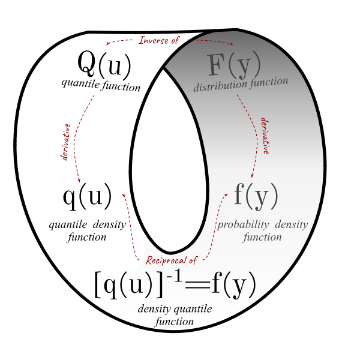
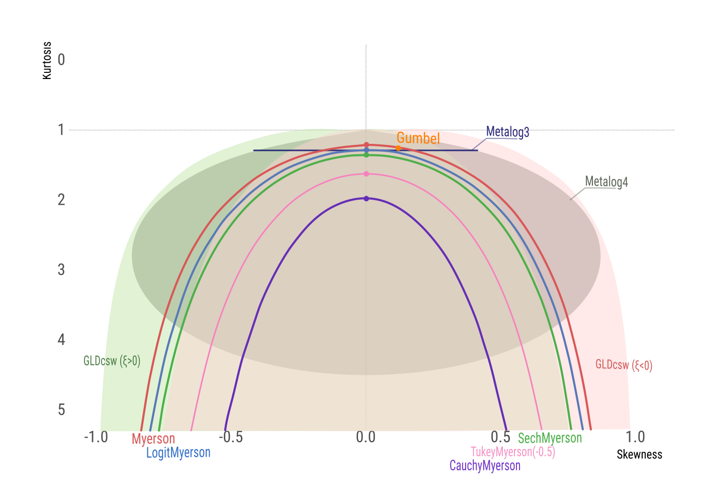
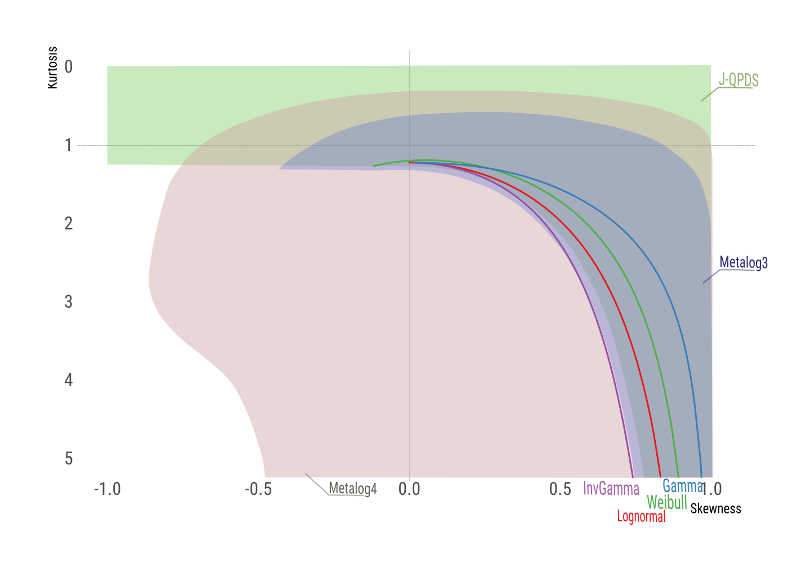
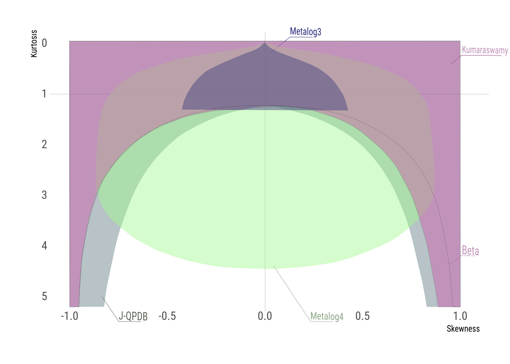

![]()

Quantile-parameterized distributions for expert knowledge elicitation
Abstract
This paper provides a comprehensive overview of quantile-parameterized distributions (QPDs) as a tool for capturing expert predictions and parametric judgments. We survey a range of methods for constructing distributions that are parameterized by a set of quantile-probability pairs and describe an approach to generalizing them to enhance their tail flexibility. Furthermore, we delve into the extension of QPDs to the multivariate setting, surveying the approaches to construct bivariate distributions, which can be adopted to obtain distributions with quantile-parameterized margins. Through this review and synthesis of the previously proposed methods, we aim to enhance the understanding and utilization of QPDs in various domains.
Keywords
quantile functions, quantile-parameterized distributions, expert knowledge elicitation, statistical distributions
1 Introduction
Judgment plays a crucial role in transforming raw data into meaningful insights. To be useful, judgment must be translated into mathematical models and assumptions. These models are designed to capture the expert’s understanding of the world, including the causal links between relevant entities. The models serve as a representation of this understanding, while also addressing knowledge limitations, treated as uncertainties. Elicitation involves translating qualitative understanding into quantitative models offering valuable insights.
Past research
Most of the expert elicitation protocols described in the literature (Hanea et al., 2021; Gosling, 2018; O’Hagan et al., 2006; Hemming et al., 2018; Morgan, 2014; Welsh and Begg, 2018; Spetzler and Staël Von Holstein, 1975) encode expert judgments about the parameter or quantity of interest as an ordered set of quantiles with corresponding probabilities. This typically includes measures such as the median and the upper and lower quartiles. Assessors are then encouraged to select a probability distribution that reasonably fits the elicited quantile-probability pairs and validate the choice with the expert (Gosling, 2018). A distribution is selected from a predefined set of “simple and convenient” distributions (O’Hagan et al., 2006) with boundedness that accounts for the nature of the elicited quantity.
Several specialized distributions have been developed to facilitate smooth interpolation of probabilistic assessments. These distributions, parameterized by quantile-probability pairs, ensure that the elicited quantile-probability pairs (QPPs) are exactly preserved (Keelin and Powley, 2011; Powley, 2013; Keelin, 2016; Hadlock, 2017; Wilson et al., 2023). Quantile-parameterized distributions are particularly valuable thanks to the interpretability of their parameters. By leveraging the elicited quantiles, these distributions enable precise capturing of expert knowlegde while maintaining a high level of flexibility in modeling.
We believe that the primary utility of QPDs lies in their ability to simplify the specification of probability distributions for model parameters, known as prior elicitation (Mikkola et al., 2021). However, these same distributions can also be employed to describe an expert’s predictions for the next observation, referred to as predictive elicitation (Winkler, 1980; Kadane, 1980; Akbarov, 2009; Hartmann et al., 2020), or to capture both uncertainty and variability through a two-dimensional probability distribution in hybrid elicitation (Perepolkin et al., 2021).
This review paper aims to introduce quantile-parameterized distributions (QPDs) to a wide readership. The literature review and the findings are presented through the perspective of quantile functions, building upon the theoretical foundations established by Parzen (Parzen, 1979) and Gilchrist (Gilchrist, 2000). The derivatives and inverses for each of the quantile functions discussed in the paper are provided in Appendix A, serving as a valuable reference for future research. Through our comprehensive review and identification of research gaps, we aim to contribute to the development of flexible and extensible distributions that can effectively capture expert knowledge. We hope that our overview of quantile-parameterized distributions will be useful for researchers and practitioners, enabling them to make an informed choice of a distribution suitable for the task.
Paper structure
In Section 2, we revisit the approaches to quantile parameterization of probability distributions and explore how QPDs can effectively describe expert beliefs regarding model parameters or predictions. In Section 3, we conduct a comprehensive review and comparison of various continuous univariate QPDs found in the literature. Specifically, we focus on the Myerson distribution and its generalization accommodating different tail thicknesses. We compare the robust moments of QPDs to assess their flexibility and behavior. This comparative analysis can guide the selection of an appropriate distribution to characterize the quantity of interest. In Section 4, we explore several methods for extending univariate distributions to a multivariate setting. These methods include the utilization of standard multivariate distributions (Drovandi and Pettitt, 2011), copulas (Hoff, 2007), and bivariate quantiles (Nair and Vineshkumar, 2023; Vineshkumar and Nair, 2019). We show how these techniques can be applied to develop a bivariate version of the Generalized Myerson distribution and demonstrate its application in parametric and predictive elicitation. Finally, in Section 5, we discuss future research directions and potential applications of QPDs in Bayesian analysis.
2 Quantile parameterization of probability distributions
A fundamental principle in Bayesian data analysis is that learning from data involves more than formulating hypotheses and models. It necessitates articulating prior beliefs, expressing existing knowledge mathematically, and translating it into probability distributions for model parameters.
To accurately translate knowledge into the language of statistical models the encoding distribution needs to be flexible, the process should be transparent, and the results must be interpretable. For continuous distributions, elicitation often consists of capturing a series of quantile-probability pairs (QPPs) (Kadane and Wolfson, 1998; Morgan, 2014), and then fitting a distribution to these pairs (O’Hagan, 2019). However, in practice, the choice of a parametric distribution to fit the elicited QPPs is often influenced by concerns about conjugacy with the selected statistical model that represents the data-generative process (the likelihood function) and/or the availability of required distribution functions and fitting algorithms in the software employed. Frequently, the selected distribution possesses fewer parameters than the number of elicited QPPs, which can result in a less-than-perfect fit (O’Hagan, 2019). For instance, it is common to elicit three quantiles (the median along with an upper and lower quartile) and subsequently attempt to fit a normal or lognormal distribution (which features two parameters) to these points.
An alternative approach to characterizing the distribution of predictions or parameters is through quantile-parameterized distributions (QPDs). These distributions are parameterized by the QPPs, allowing the elicited values to directly define the distribution, thereby ensuring a good fit and interpretability of parameters. The QPDs examined in this paper can accommodate a wide range of shapes and boundedness, making them valuable for accurately representing experts’ prior beliefs.
Parameterizing distributions using a vector of quantiles is not a novel concept in the scientific community. The earliest mention can be traced back to the substitution likelihood proposed by Jeffreys (Jeffreys, 1939), which outlines a non-parametric procedure for inferring the median using a set of sample quantiles. Subsequently, similar ideas were further developed in (Boos and Monahan, 1986; Lavine, 1995; Dunson and Taylor, 2005).
All the QPDs found in the literature are constructed using the quantile function. These distributions are built either by transforming simpler quantile functions or by simultaneous fitting of parameterizing quantiles, as described below.
Let \(Y\) be a random variable with a (cumulative) distribution function (CDF) denoted as \(F_Y(y\vert\theta)\). The quantile function (QF) \(Q_Y(u\vert\theta)\) for \(Y\) is defined as
\[ Q_Y(u\vert\theta)=\inf\{y:F_Y(y\vert\theta)\geq u\}, \; u\in[0,1] \]
Here, \(\theta\) represents the distribution parameter, and the subscript \(_Y\) indicates that the depth \(u\) corresponds to the random variable \(Y\).
Both the CDF and the QF are considered equally valid ways of defining a distribution (Tukey, 1965). For a quantile function that is right-continuous and strictly increasing over the support of \(Y\), the quantile function \(Q_Y(u)\) is simply the inverse of the distribution function, denoted as \(Q_Y(u\vert\theta)=F_Y^{-1}(u\vert\theta)\). Therefore, the quantile function is often referred to as the inverse CDF.
The derivative of the quantile function, known as the quantile density function (QDF), is denoted as \(q(u) = \frac{dQ(u)}{du}\). It is reciprocally related to the probability density function (PDF) \(f(x)\), such that \(f(Q(u))q(u) = 1\). The quantity \(f_Y(Q_Y(u\vert\theta))=[q_Y(u\vert\theta)]^{-1}\) is referred to as the density quantile function (Parzen, 1979) or p-pdf (Gilchrist, 2000). The relationships between these functions are concisely illustrated in the probability function Möbius strip (Figure 1).
Although many of the distributions discussed in Section 3 have closed-form cumulative distribution functions (CDFs) and probability density functions (PDFs), the functional form of the quantile function (QF) is often simpler and can be reasoned about in terms of other quantile functions, following Gilchrist’s QF transformation rules summarized in Table 1. This table presents the addition, linear combination, and multiplication rules, which involve two quantile functions \(Q_1\) and \(Q_2\). We will refer to these three rules as Gilchrist combinations, as they represent valid ways to combine quantile functions to create new quantile functions.
The quantile-parameterized distributions in this paper are categorized into two groups based on their construction method. The first group comprises distributions that are directly parameterized by the quantile-probability pairs (QPPs). This group includes the Myerson distribution (Myerson, 2005), and the Johnson Quantile-Parameterized Distribution (Hadlock and Bickel, 2017, 2019). These distributions are constructed by reparameterizing or transforming existing distributions, following Gilchrist rules (Table 1). The transformations used to construct them are detailed in the next section.
The other group of distributions is indirectly parameterized by the QPPs. They require a fitting step where the quantile-probability pairs are translated into distribution parameters, usually through optimization or least-squares methods. This group includes the Simple Q-Normal (Keelin and Powley, 2011), Metalog (Keelin, 2016), quantile mixtures (Peng et al., 2023), the variant of the Generalized Lambda Distribution (GLD) by Chalabi et al (Chalabi et al., 2012), and the quantile-parameterized Triangular (Two-Sided Power) distribution by Kotz and van Dorp (Kotz and Van Dorp, 2004). Each distribution’s fitting method is described in the respective subsections below.
3 Univariate quantile-parameterized distributions
This section reviews various continuous univariate QPDs from the literature. We then discuss the generalized form for these distributions, based on the variations of these QPDs appearing in the literature. For each distribution, we present its quantile function and discuss the parameterization and feasibility conditions. The derivative and inverse of each distribution can be found in Appendix A.
3.1 Myerson distribution
One of the earliest examples of a distribution parameterized by quantiles is the generalized log-normal distribution defined by the median and the upper and lower quartiles proposed by (Myerson, 2005). It relies on a transformation of the normal quantile function.
The Myerson distribution can be viewed as parameterized by three quantile values \(\{q_1, q_2, q_3\}\), which correspond to the cumulative probabilities \(\{\alpha, 0.5, 1-\alpha\}\). These quantiles are symmetrical around the median and are defined by the tail parameter \(0<\alpha<0.5\). This type of parameterization is known as the Symmetric Percentile Triplet (SPT, \(\alpha\)-level SPT or \(\alpha\)-SPT) and is also used in several other quantile-parameterized distributions that we will describe below. The Myerson quantile function is
\[ \begin{gathered} \rho=q_3-q_2;\; \beta=\frac{\rho}{q_2-q_1};\; \kappa(u)=\frac{S(u)}{S(1-\alpha)}\\ Q_Y(u \vert q_1,q_2,q_3,\alpha)= \begin{cases} q_2+\rho\frac{\beta^{\kappa(u)}-1}{\beta-1}, \quad &\beta \neq 1\\ q_2+\rho\kappa(u), \quad &\beta =1 \end{cases} \end{gathered} \]
Here, \(u\) represents the depth of the observations of the random variable \(Y\) given the parameterizing \(\alpha\)-SPT \(\{q_1, q_2, q_3, \alpha\}\), with \(0 < \alpha < 0.5\). The parameter \(\rho\) is the upper p-difference, and \(\beta\) is the ratio of the inter-percentile ranges, known as the skewness ratio (Gilchrist, 2000, p. 72). The kernel quantile function \(S(u)\) is equal to the quantile function of the standard normal distribution, also referred to as the probit, defined as \(S(u) = \Phi^{-1}(u)\). The formulas for the derivative and the inverse quantile function of the Myerson QPD can be found in Appendix A.
It is important to note that while the Myerson distribution includes the normal distribution as a special case when the skewness parameter \(\beta = 1\), it can exhibit right-skewness or left-skewness for other values of \(\beta\). In the symmetrical case, the range of the quantile function is \((-\infty, \infty)\). For the right-skewed distribution (\(\beta > 1\)), the range is \((q_2 - \frac{\rho}{\beta - 1}, \infty)\), and for the left-skewed distribution (\(0 < \beta < 1\)), the range is \((-\infty, q_2 - \frac{\rho}{\beta - 1})\). The limiting case of the skewed Myerson distribution \(\lim_{u \rightarrow 0} Q_Y(u\vert\theta)\) for \(\beta > 1\) (and the other limit for \(0 < \beta < 1\)) possesses some important properties that we discuss in Section 3.3.2 below.
The basic quantile function (Gilchrist, 2000; Lampasi, 2008) underlying the Myerson distribution is a simple probit, \(S(u) = \Phi^{-1}(u)\), transformed using the exponentiation function \(T(x) = \beta^{x}\), where \(\beta > 0\) represents the skewness ratio (Gilchrist, 2000). The quantile parameterization is facilitated by \(\kappa(u)\), which takes values \(\{-1,0,1\}\) for the three quantiles \(\{q_1, q_2, q_3\}\), such that \(Q(\alpha) = q_1\), \(Q(0.5) = q_2\), and \(Q(1 - \alpha) = q_3\).
3.2 Johnson Quantile-Parameterized Distribution
Hadlock and Bickel (Hadlock, 2017) reviewed the existing quantile-parameterized distributions and proposed the quantile parameterization of the Johnson SU family of distributions (Johnson et al., 1994). In their paper, Hadlock and Bickel (Hadlock and Bickel, 2017) presented two versions of the distribution: the bounded (J-QPD-B) and the semi-bounded (J-QPD-S), both parameterized by an SPT \(\{q_1, q_2, q_3, \alpha\}\) and the bound(s).
The J-QPD-B distribution is obtained by applying the inverse-probit transformation to the Johnson SU quantile function \(Q_{SU}(u) = \xi + \lambda\sinh(\delta(S(u) + \gamma))\), where \(\delta\) and \(\gamma\) are two shape parameters. This function is then rescaled to the compact interval \([l_b, u_b]\). The J-QPD-B quantile function is
\[ \begin{gathered} Q_B(u\vert q_1, q_2, q_3, \alpha)= \begin{cases} l+(u_b-l_b)S^{-1}(\xi+\lambda\sinh(\delta(S(u)+nc))), \quad &n\neq0\\ l+(u_b-l_b)S^{-1}\left(B+\left(\frac{H-L}{2c}\right)S(u)\right), \quad &n=0 \end{cases} \end{gathered} \]
where
\[ \begin{gathered} S(u)=\Phi^{-1}(u); \quad c=S(1-\alpha);\\ L=S\left(\frac{q_1-l_b}{u_b-l_b}\right); \quad B=S\left(\frac{q_2-l_b}{u_b-l_b}\right);\\ H=S\left(\frac{q_3-l_b}{u_b-l_b}\right); \quad n=\text{sgn}(L+H-2B)\\ \xi=\begin{cases}L, \quad n=1,\\ B, \quad n=0,\\ H, \quad n=-1,\end{cases}\\ \delta=\frac{1}{c}\cosh^{-1}\left(\frac{H-L}{2\min(B-L,H-B)}\right)\\ \lambda=\frac{H-L}{\sinh(2\delta c)} \end{gathered} \]
The left panel in Figure 2 showcases the J-QPD-B quantile function, which is parameterized using 0.25-SPT and 0.01-SPT assessments of the proportion of fruit infested with Citripestis sagittiferella, as elicited by (EFSA et al., 2023). The dashed line represents the Beta distribution fitted by the authors. The J-QPD-B, being parameterized by an SPT, effectively captures three of the five parameterizing quantiles, while the Beta distribution only provides an approximation. Finding parameters of Beta distribution requires an optimization step.
The J-QPD-S distribution is a semi-bounded variant of the distribution that employs exponentiated hyperbolic arcsine transformations of the Johnson’s SU quantile function (Hadlock and Bickel, 2017)
\[ \begin{gathered} Q_S(u\vert q_1, q_2, q_3, \alpha)=\begin{cases} l_b+\theta\exp\left(\lambda\sinh\left(\sinh^{-1}(\delta S(u))+\sinh^{-1}(nc\delta)\right)\right), \quad &n \neq 0\\ l_b+\theta\exp\left(\lambda\delta S(u)\right), \quad &n=0 \end{cases} \end{gathered} \]
where
\[ \begin{gathered} S(u)=\Phi^{-1}(u); \quad c=S(1-\alpha);\\ L=\ln(q_1-l_b); \quad B=\ln(q_2-l_b);\\ H=\ln(q_3-l_b); \quad n=\text{sgn}(L+H-2B)\\ \theta=\begin{cases} q_1-l_b, \quad n=1,\\ q_2-l_b, \quad n=0,\\ q_3-l_b, \quad n=-1,\end{cases}\\ \delta=\frac{1}{c}\sinh\left(\cosh^{-1}\left(\frac{H-L}{2\min(B-L,H-B)}\right)\right)\\ \lambda=\frac{1}{\delta c}\min(H-B, B-L) \end{gathered} \]
When \(n=\text{sgn}(L+H-2B)\) evaluates to zero, he resulting distribution is a lognormal distribution with parameters \(\mu=\ln(\theta)=\ln(q_2-l_b)\) and \(\sigma=\lambda\delta=(H-B)/c\). This distribution has support on the interval \([l_b,\infty]\).
The right panel in Figure 2 depicts the J-QPD-S quantile function, which is parameterized using 0.25-SPT and 0.01-SPT assessments of the total trade flow for citrus fruit imported by the EU from Indonesia, Malaysia, Thailand, and Vietnam in tons/year (EFSA et al., 2023).
3.3 Generalisations of QPDs
3.3.1 Generalized Johnson Quantile-Parameterized Distribution
Hadlock and Bickel (Hadlock and Bickel, 2019) introduced the generalized version of the Johnson Quantile-Parameterized distribution system, denoted as G-QPD, by replacing the Normal distribution in the core of the Johnson SU quantile function with the quantile functions of the logistic and Cauchy distributions.
The generalized quantile function (QF) shares similarities with the probit-based distribution described earlier, with \(S(u)\) defined as the quantile function of either the logistic or Cauchy distribution.
The standard quantile function and distribution function of the logistic distribution are given by:
\[ S(u)= \ln\left(\frac{u}{1-u}\right);\quad S^{-1}(y)=[\exp(-y)+1]^{-1} \]
The standard quantile function and distribution function of the Cauchy distribution are given by:
\[ S(u)= \tan\left[\pi\left(u-\frac{1}{2}\right)\right];\quad S^{-1}(y)=\frac{1}{ \pi}\arctan(y)+\frac{1}{2} \]
Hadlock and Bickel (Hadlock and Bickel, 2019) show that the kernel quantile function \(S(u)\) can be any standardized (\(S(0.5)=0\)), symmetrical (\(s(u)=s(1-u)\)), and unbounded (\(S(u)\in(-\infty;\infty)\)) quantile function with a smooth quantile density \(dS(u)/du=s(u)\). The authors further showed that if \(S(u)\) and \(S^{-1}(y)\) are expressible in closed-form, the quantile function and distribution function of G-QPD will also be closed-form.
For the logistic kernel, the G-QPD-S represents the generalized log-logistic distribution, characterized by two shape parameters, \(\lambda\) and \(\delta\). For the Cauchy kernel, the G-QPD-S corresponds to the shifted log-Cauchy distribution (Hadlock and Bickel, 2019).
3.3.2 Generalized Myerson distributions
Following the approach in Hadlock and Bickel (Hadlock and Bickel, 2019), Myerson distribution can be generalized by substituting the Normal kernel quantile function \(S(u)=\Phi^{-1}(u)\) with an alternative symmetrical quantile function based on the depth \(u\). Below, we discuss possible kernels and the resulting distributions:
Logit-Myerson distribution. Recently Wilson et al (Wilson et al., 2023) reparameterized log-logistic distribution in terms of a Symmetric Percentile Triplet. Even though the authors do not recognize it as such, the resulting quantile-parameterized distribution is a Myerson distribution with logit kernel QF \(S(u)=\ln\left(\frac{u}{1-u}\right)\)).
There could be several reasons why one might prefer the logit function over the probit function (Berkson, 1951). For example, distribution based on logit may exhibit greater numerical stability due to its simple closed-form quantile function, which does not rely on numerical approximation during sampling. Logit-Myerson distribution displays slightly heavier tails compared to the standard (probit-based) Myerson distribution (Figure 3).
Sech-Myerson distribution. Following the same principle adopted by Wilson et al. (Wilson et al., 2023) a variant of Myerson distribution may be created using the hyperbolic secant quantile function:
\[ S(u)=\ln\left[\tan\left(\frac{\pi}{2}u\right)\right] \]
The Sech-Myerson distribution possesses thicker tails than the Logit-Myerson distribution for the same parameterizing SPT \(\{-5,4,16, 0.25\}\) (Figure 3). In Section 3.8, we conduct a comparative analysis of different variations of the Generalized Myerson distribution alongside their parametric counterparts and other quantile distributions.
Theoretically, there is an infinite range of quantile function (QF) kernels that can be utilized to generate new variations of the Generalized Myerson distribution. These candidate kernel distributions can even include shape parameters, as long as the resulting \(S(u)\) remains standardized, symmetrical, and unbounded, as specified above. For instance, it is possible to incorporate the basic QF of the Tukey Lambda distribution \(S(u\vert\lambda)=u^\lambda-(1-u)^\lambda\) for a fixed \(\lambda \neq 0\), or the Cauchy distribution \(S(u)=\tan[\pi(u-0.5)]\), as employed by (Hadlock and Bickel, 2019). However, it is important to note that not all standard quantile functions are created equal. To illustrate the issue of unreliable kernels, let us consider Myerson distributions based on the Cauchy and Tukey Lambda quantile functions (for \(\lambda=-0.5\)). As can be observed in Figure 4, the density of Generalized Myerson distribution with these kernels exhibits unexpected spike near the lower bound.
While all right-skewed Generalized Myerson distributions are bounded on the left at \(\lim_{u\rightarrow0}Q(u\vert\theta)=q_2-\rho\frac{1}{\beta-1}\) regardless of the kernel used, the quantile density at the left limit \(\lim_{u\rightarrow0}[q(u\vert\theta)]^{-1}\) is not independent of the kernel. Although we can assume that \(q(0)=\infty\), the lower tail of the density quantile function \([q(u)]^{-1}\) may exhibit a curling effect for certain kernels, resulting in an increase in density for lower values of \(u\). This effect is caused by the non-monotonic behavior of the quantile convexity function \(c(u)=dq(u)/du\). This can be easily verified by taking the second derivative of \(\beta^{S(u)}\) for \(\beta>0\). While such kernels are mathematically valid and yield a non-decreasing Generalized Myerson QF, we believe that they may be less useful due to the counter-intuitive concentration of density in the bounded tail. Consequently, we do not recommend using Cauchy or Tukey Lambda kernels in practical applications.
3.4 Simple Q-Normal, Metalog distributions
An alternative system of quantile-parameterized distributions was proposed by Keelin and Powley (Keelin and Powley, 2011; Powley, 2013). This approach relies on the finite Taylor expansion of parameters in the standardized quantile functions. Within this framework, two distributions were introduced: the Simple Q-Normal distribution and the Metalog distribution.
The Simple Q-Normal (SQN) distribution was developed by expanding the parameters in the normal quantile function. Keelin et al. (2011) used this method to express the parameters of the normal quantile function \(Q(u\vert\mu,\sigma)=\mu+\sigma z(u)\) as linear functions of the depth \(u\). Specifically, \(\mu(u)=a_1+a_4u\) and \(\sigma(u)=a_2+a_3u\), where \(z(u)=\Phi^{-1}(u)\) denotes the standard normal quantile function. Therefore, the quantile function of the SQN distribution can be expressed as follows:
\[ Q(u)= a_1+a_2z(u)+a_3uz(u)+a_4u\\ \tag{1}\]
where \(z(u)=\Phi^{-1}(u)\), and \(a=\{a_1,a_2,a_3, a_4\}\) represents a vector of parameters.
Consider a quantile-probability tuple of size 4, denoted as \(\{\mathbf{p}, \mathbf{q}\}_4\), which consists of an ordered vector of cumulative probabilities \(\mathbf{p}=\{p_1,p_2,p_3, p_4\}\) and an ordered vector of corresponding quantiles \(\mathbf{q}=\{q_1,q_2,q_3, q_4\}\). Substituting these vectors into the SQN quantile function for \(u\) and \(Q(u)\), respectively, we obtain the following matrix equation:
\[ \mathbf{q}=\mathbb Pa \tag{2}\]
where
\[ \begin{gathered} \mathbb P=\begin{bmatrix} 1 & z(p_1) & p_1z(p_1) & p_1\\ 1 & z(p_2) & p_2z(p_2) & p_2\\ 1 & z(p_3) & p_3z(p_3) & p_3\\ 1 & z(p_4) & p_4z(p_4) & p_4\end{bmatrix} \end{gathered} \]
and \(a=\{a_1, a_2, a_3, a_4\}\) represents the parameter vector of the SQN distribution.
The parameter vector \(a\) can be obtained by solving the matrix Equation 2, given the 4-element quantile-probability tuple \(\{\mathbf{p}, \mathbf{q}\}_4\) (Keelin and Powley, 2011; Perepolkin et al., 2021).
The same approach was later employed by (Keelin, 2016) in creating the metalog (meta-logistic) distribution. Starting with the quantile function of the logistic distribution \(Q(u\vert\mu,s)=\mu+s\text{logit}(u)\), where \(\mu\) corresponds to the mean and \(s\) is proportional to the standard deviation \(\sigma=s\pi/\sqrt3\), (Keelin, 2016) expanded the parameters \(\mu\) and \(s\) using a finite Taylor series centered at 0.5. Specifically, \(\mu(u)=a_1+a_4(u-0.5)+a_5(u-0.5)^2+\dots\) and \(s(u)=a_2+a_3(u-0.5)+a_6(u-0.5)^2+\dots\), where \(a_i, \; i = \{1,2,\dots,n\}\) are real constants.
Therefore, the metalog quantile function is:
\[ Q(u)= a_1+a_2\text{logit}(u)+a_3(u-0.5)\text{logit}(u)+a_4(u-0.5)+a_5(u-0.5)^2\cdots, \]
Given a QPT of size \(m\) denoted by \(\{\mathbf{p}, \mathbf{q}\}_m\), where \(\mathbf{p}\) and \(\mathbf{q}\) are ordered vectors of cumulative probabilities and corresponding quantiles, respectively, the vector of coefficients \(\mathbf{a}={a_1,\dots,a_m}\) can be determined by solving the matrix equation \(\mathbf{q}=\mathbb{P}\mathbf{a}\), where \(\mathbf{p}\), \(\mathbf{q}\), and \(\mathbf{a}\) are column vectors, and \(\mathbb{P}\) is an \(m \times n\) matrix:
\[ \begin{gathered} \mathbb{P} = \left[\begin{array}{lllll} 1 &\text{logit}(p_1) &(p_1-0.5)\text{logit}(p_1) &(p_1-0.5) &\cdots\\ 1 &\text{logit}(p_2) &(p_2-0.5)\text{logit}(p_2) &(p_2-0.5) &\cdots\\ & &\vdots\\ 1 &\text{logit}(p_m) &(p_m-0.5)\text{logit}(p_m) &(p_m-0.5) &\cdots \end{array}\right] \end{gathered} \tag{3}\]
The vector of coefficients \(\mathbf{a}\) can be determined as \(\mathbf{a}=[\mathbb{P}^{T}\mathbb{P}]^{-1}\mathbb{P}^{T}\mathbf{q}\). If \(\mathbb{P}\) is a square matrix, meaning the number of terms \(n\) is equal to the size of the parameterizing QPT \(m\), the equation can be further simplified to \(\mathbf{a}=\mathbb{P}^{-1}\mathbf{q}\). Metalog is said to be approximated when the number of quantile-probability pairs used for parameterization exceeds the number of terms in the metalog QF (Keelin, 2016; Perepolkin et al., 2021).
The SQN and Metalog distributions are families of extended distributions that, in theory, can have an arbitrary number of terms. Keelin (Keelin, 2016) demonstrated the flexibility of the metalog distribution and its ability to approximate arbitrarily complex probability density functions with high precision, given enough terms in the metalog specification. In practice, 10-15 terms are sufficient to approximate the distributional shapes of virtually any complexity (Keelin and Howard, 2021). Keelin (Keelin, 2016) introduced the bounded logit-metalog, the semi-bounded log-metalog, and a special case of a 3-term metalog parameterized by \(\alpha\)-SPT (SPT-metalog).
However, not all combinations of parameters \(\mathbf{a}\) in metalog and SQN distributions result in a feasible (non-decreasing) quantile function. For an arbitrary \(\mathbf{a}\)-vector, feasibility must be checked (Keelin and Powley, 2011). In the case of 3-term metalogs, the feasibility conditions are straightforward (Keelin, 2016). But as the number of terms increases, such conditions become increasingly complex (Keelin, 2017). Having to deal with such feasibility requirements stands in contrast with QF’s that are constructed using Gilchrist rules Table 1, which guarantee feasibility.
3.5 Quantile mixtures
Recently (Peng et al., 2023) proposed a novel framework for extended quantile-parameterized distributions based on quantile mixtures (not to be confused with CDF/PDF mixtures, (Gilchrist, 2000, p. 107)). They introduced a formulation in which a QPD quantile function is expressed as a linear combination of \(I\) standardized quantile functions, following Gilchrist’s linear combination rule (Table 1):
\[ G(u\vert\theta)=\sum_{i=0}^I\theta_iQ_i(u) \]
Here, \(Q_i(u)\) represent basis quantile functions for the random variable \(Y\) with \(Q_0(u)=1\), and \(\pmb\theta=\{\theta_0,\theta_1,\dots,\theta_I\}\) is a non-negative parameter vector that determines the contribution of each QF component in the quantile mixture. To compute the coefficients \(\pmb\theta\), the system of equations is solved
\[ \mathbf q=\mathbb Q \pmb\theta+\pmb\epsilon \]
where \(\mathbf{q}=\{q_1,q_2,\dots, q_j\}\) is an ordered vector of \(J\) parameterizing quantiles, corresponding to an ordered vector of cumulative probabilities \(\mathbf{p}=\{p_1,p_2,\dots, p_j\}\), \(\pmb\theta\) is a non-negative vector of \(I+1\) parameters, \(\pmb\epsilon\) is a \(J\)-size vector of errors to be minimized, and \(\mathbb Q\) is a \(J\times(I+1)\) matrix of regression factors
\[ \begin{gathered} \mathbb{Q} = \left[\begin{array}{lllll} 1 &Q_1(p_1) &Q_2(p_1) &\cdots &Q_I(p_1)\\ 1 &Q_1(p_2) &Q_2(p_2) &\cdots &Q_I(p_2)\\ &\vdots &\vdots &\ddots \\ 1 &Q_1(p_J) &Q_2(p_J) &\cdots &Q_I(p_J) \end{array}\right] \end{gathered} \]
By ensuring non-negativity of weights (\(\theta_i\geq0\)), the solution guarantees a proper non-decreasing quantile function. To estimate the values of the vector \(\pmb\theta\in\Theta\), the authors suggest using constrained weighted least squares regression with optional regularization. The authors demonstrated that the estimator \(\widehat{\pmb\theta}=\underset{\pmb\theta\in\Theta}{\text{argmin}} \left(\frac{1}{J}\sum_{j=1}^Jw_j\mathcal{E}_q(y_j-Q_j\pmb\theta)\right)^{\frac{1}{q}}\), \(\mathcal{E}_q(x)=\lvert x \rvert^q\), \(w_j>0\), is asymptotically a q-Wasserstein distance estimator, which converges in distribution to a Normal distribution. The paper (Peng et al., 2023) includes the application of the quantile mixture model using a large number of asymmetric t-distributions, and a quantile mixture of Generalized Beta II distributions.
The quantile mixtures method of creating new QPDs guarantees feasibility by construction, while affording nearly infinite flexibility, provided that the component quantile functions are selected from a wide set of distributions of varying shapes. Besides, a QPD constructed as a linear combination of QFs is guaranteed to be unimodal, unless one of the component in the mixture is multimodal (see Gilchrist, 2000 for examples). In addition, the method proposed by (Peng et al., 2023) offers an advantage of resulting in closed-form quantile function and quantile density function, provided that each of the components can be expressed analytically. Unfortunately, neither asymmetric t-distribution nor Generalized Beta II distribution, used by the authors, has a closed-form QF. However, one can construct a highly flexible quantile function using Gilchrist rules (Table 1) or use one of the existing well-studied QFs discussed in the literature. In Section 3.7, we provide an example of using a quantile mixture of diversely-shaped quantile functions to construct a bespoke highly flexible QPD.
3.6 Other distributions
3.6.1 Triangular and Two-Sided Power distributions
Several other distributions with at least some parameters mapped to quantiles were proposed, including the reparameterization of the Generalized Lambda Distribution by (Chalabi et al., 2012) and the quantile-parameterized triangular (two-sided power) distribution by (Kotz and Van Dorp, 2004).
Kotz and van Dorp (Kotz and Van Dorp, 2004) describe the quantile-parameterized version of the triangular distribution (Johnson, 1997). This bounded distribution is widely used in the finance and insurance industry and is popularized by the @Risk software package, developed by Palisade (Palisade Corporation, 2009). The triangular distribution is parameterized by the two quantiles \(q_{a}\) and \(q_{b}\), and the mode \(m\), subject to the constraint that \(a\leq q_a\leq m\leq q_b\leq b\), where \(a\) and \(b\) represent the lower and upper bounds, respectively. The standard quantile function for the triangular distribution is expressed in terms of the bounds \(a\), \(b\), and the mode \(m\).
\[ \begin{gathered} Q(u\vert a,m,b)=\begin{cases} a+\sqrt{u(m-a)(b-a)}, &\quad \text{for } 0\leq u \leq\frac{m-a}{b-a}\\ b-\sqrt{(1-u)(b-m)(b-a)}, &\quad \text{for } \frac{m-a}{b-a}\leq u \leq 1 \end{cases} \end{gathered} \]
In (Kotz and Van Dorp, 2004) the authors show that given the two parameterizing quantile-probability pairs \({q_a,p_a}\) and \({q_b,p_b}\) and the mode value \(m\), there exists a unique value of depth \(p_a<p<p_b\) corresponding to the root of the function
\[ g(p)=\frac{(m-q_a)(1-\sqrt{\frac{1-p_b}{1-p}})}{(q_b-m)(1-\sqrt{\frac{p_a}{p}})+(m-q_a)(1-\sqrt{\frac{1-p_b}{1-p}})}-p \]
The root value \(p\in (p_a,p_b)\) of the function \(g(p)\) can be found using any of the bracketing root-finding algorithms (Perepolkin et al., 2023). It can then be substituted into the following expressions to find the lower \(a\) and upper \(b\) limit parameters of the triangular distribution:
\[ \begin{gathered} a(p) \equiv \frac{q_a-m\sqrt{\frac{p_a}{p}}}{1-\sqrt{\frac{p_a}{p}}}, \quad a(p)<q_a\\ b(p) \equiv \frac{q_b-m\sqrt{\frac{1-p_b}{1-p}}}{1-\sqrt{\frac{1-p_b}{1-p}}}, \quad b(p)>q_b \end{gathered} \]
The book (Kotz and Van Dorp, 2004) provides an algorithm for fitting a four-parameter generalization of the triangular distribution called the Two-Sided Power Distribution (TSP), using three quantile-probability pairs and a mode value. For more information on fitting the Quantile-Parameterized TSP Distribution by quantiles, refer to Section 4.3.3 of (Kotz and Van Dorp, 2004).
3.6.2 Generalized Lambda Distribution
Chalabi, Scott and Würtz (CSW) (Chalabi et al., 2012) proposed an asymmetry-steepness reparameterization of the Generalized Lambda Distribution (GLD) (Freimer et al., 1988) with four parameters. This reparameterization involves mapping the location to the median and the scale to the interquartile range (IQR), which corresponds to the first and second robust moments (Kim and White, 2004; Moors, 1988).
The reparameterized Generalized Lambda Distribution (CSW GLD) has a quantile function given by
\[ Q(u\vert\tilde\mu,\tilde\sigma,\chi,\xi)=\tilde\mu+\tilde\sigma\frac{S\left(u\vert\chi,\xi\right)-S\left(\frac{1}{2}\vert\chi,\xi\right)}{S\left(\frac{3}{4}\vert\chi,\xi\right)-S\left(\frac{1}{4}\vert\chi,\xi\right)} \]
where \(\tilde\mu,\tilde\sigma,\chi,\xi\) represent the location, scale, asymmetry, and steepness parameters, respectively. The specific form of the basic function \(S(u)\) depends on the values of the parameters \(\chi\) and \(\xi\)
\[ S(u\vert\chi,\xi)= \begin{cases} \begin{aligned} &\ln(u)-\ln(1-u), \quad \text{if }\chi=0,\xi=0.5&\\ &\ln(u)-\frac{1}{2\alpha}\left[(1-u)^{2\alpha}-1\right], \quad \text{if }\chi\neq0,\xi=\frac{1}{2}(1+\chi)&\\ &\frac{1}{2\beta}\left[u^{2\beta}-1\right]-\ln(1-u), \quad \text{if }\chi\neq0,\xi=\frac{1}{2}(1-\chi)&\\ &\frac{1}{\alpha+\beta}\left[u^{\alpha+\beta}-1\right]-\frac{1}{\alpha-\beta}\left[(1-u)^{\alpha-\beta}-1\right], \quad \text{otherwise} \end{aligned} \end{cases} \]
where \(\alpha=0.5\frac{0.5-\xi}{\sqrt{\xi(1-\xi)}}\) and \(\beta=0.5\frac{\chi}{\sqrt{1-\chi^2}}\). The bounds of the distribution are given by
\[ \begin{gathered} S(0\vert\chi,\xi)=\begin{cases} \begin{aligned} &-\frac{1}{\alpha+\beta},\quad &\text{if }\xi<\frac{1}{2}(1+\chi)\\ &-\infty, \quad &\text{otherwise} \end{aligned} \end{cases}\\ S(1\vert\chi,\xi)=\begin{cases} \begin{aligned} &\frac{1}{\alpha-\beta},\quad &\text{if }\xi<\frac{1}{2}(1-\chi)\\ &\infty, \quad &\text{otherwise} \end{aligned} \end{cases} \end{gathered} \]
The CSW GLD can have unbounded, bounded, and semi-bounded support, accommodating a wide range of shapes, including unimodal, monotone, U-shaped, and S-shaped densities (Chalabi et al., 2012). Although the CSW GLD is not strictly parameterized by quantiles, the mapping of the location and scale parameters to the median and IQR makes it a suitable candidate for expert-informed distribution specification.
Several specialized methods have been developed for fitting the GLD to samples (Karian and Dudewicz, 2003). The parameterization of the CSW GLD simplifies the fitting process because two of the four parameters can be directly calculated from the sample: the location parameter is equal to the sample median, and the scale parameter is equal to the interquartile range. The remaining parameters can be estimated using various methods, including robust moment matching, quantile matching, trimmed L-moments, distributional least squares/absolutes, as well as maximum likelihood estimation (Chalabi et al., 2012; Gilchrist, 2000). The range of feasible values for the steepness and asymmetry parameters can be further reduced with the shape conditions specified in Section 3.5 of (Chalabi et al., 2012).
Recently, (Dedduwakumara et al., 2021) proposed a new method of matching the shape of the GLD distribution to data using the probability density quantile (pdQ) function (Staudte, 2017). For the quantile function \(Q(v), \; v\in [0,1]\) and the corresponding density quantile function \(f(Q(v))=[q(v)]^{-1}\), the pdQ is defined as
\[ f^*(v)=\frac{f(Q(v))}{E\left[f(Q(v))\right]} \]
The probability density quantile function is defined on the unit square and is independent of the location and scale parameters.
Since integrating the GLD density quantile function is difficult, (Staudte, 2017, sec. 2.2), proposed using the kernel density method to estimate the empirical QDF and, thus, an empirical pdQ for samples from continuous distributions. Fitting the CSW GLD to a sample can be reduced to finding the asymmetry and steepness parameters that minimize
\[ \underset{\chi,\xi}{\text{argmin}}\int_0^1\left[f^*(v, \chi, \xi)-f_{e}^*(v)\right]^2du \]
where \(f^*(v,\chi,\xi)\) is the pdQ of the CSW GLD, and \(f^*_e(v)\) is the empirical pdQ of the sample. The authors (Dedduwakumara et al., 2021) suggest approximating the integral by a discrete set of depths \(v\), replacing the integral with a sum.
3.7 Example
As an illustration of a faithful approximation of a large number of quantile-probability pairs by QPD, we take 4000 posterior samples (4 chains of 1000 samples each) of one of the random intercepts in the Eight Schools example model included in the cmdstanr package (Gabry and Češnovar, 2022) in R. The Eight Schools problem (Rubin, 1981) measuring the effectiveness of SAT coaching program in 8 US schools is often used as an example model in introductory classes on Bayesian Statistics. In cmdstanr it is modeled using a hierarchical Bayesian model with normal priors for each of the 8 random intercepts theta. However, due to the low number of posterior samples and the heterogeneity in the data, the marginal posterior distributions of the intercept parameters theta deviate from the Gaussian shape in various ways (Figure 5).
An empirical distribution of posterior samples from a Bayesian model can be viewed as a large number of quantile-probability pairs. Although it is unlikely that such number of quantile-probability pairs could ever be elicitable from an expert (in our case 4000), it could still be of interest to approximate such marginal posterior distribution with a highly flexible quantile function, e.g. for the purpose of posterior passing (Brand et al., 2019; Pritsker, 2021). Closed-form QF expression for the posterior margins would allow reusing it as a prior in a similar model at a later stage. We discuss multivariate extension of this idea in Section 4.
theta in the Eight Schools example model (Gabry and Češnovar, 2022)
Figure 7 shows a QPD approximation of the marginal distribution of theta[5] using a quantile mixture of standardized (centered at zero and with the scale parameter set to one) Chalabi et al. (2012) Generalized Lambda Distributions (CSW GLD). In order to ensure the diversity of mixture components we generated 400 independent uniformly distributed pairs of the two shape parameters for GLD components using Hubbard (2019) pseudo random number generator.
We constructed the matrix \(\mathbb Q\) above following the method outlined by Peng et al. (2023) and used Lawson-Hanson non-negative least squares algorithm (implemented in nnls package (Mullen and van Stokkum, 2023) in R) to find the weights for each of the mixture components. The non-zero elements are shows in Figure 6 along with the weights (which become the scale parameters of the quantile mixture components).
Figure 7 shows the histogram of 4000 parameter values for theta[5] along with the approximation using the quantile mixture with the components shown in Figure 6. The resulting mixture is a linear combination of GLD quantile functions with a closed form QF and DQF, which makes it possible to reuse this distribution as a quantile-based prior in a Bayesian model (Perepolkin et al., 2023).
3.8 Choosing quantile-parameterized distribution
A common approach to assess the properties of probability distributions is through central moments, denoted by \(\mu_k=\mathbb{E}[(Y-\mu)^k]\), where \(\mu\) represents the expected value of \(Y\). Karl Pearson introduced a classification system for distributions using moment ratios associated with skewness and kurtosis (Fiori and Zenga, 2009):
\[ \beta_1=\frac{\mu_3^2}{\mu_2^3},\quad \beta_2=\frac{\mu_4}{\mu_2^2} \]
While computing moments using the quantile function is straightforward (the \(n\)-th raw moment is \(\mu_k=\int_0^1Q(u)^kdu\)), it may not be possible to calculate higher-order moments for certain distributions.
Alternatively, robust alternatives to moments can be utilized, such as the sample median \(\mu_r\), the interquartile range \(\sigma_r\), the quartile-based robust coefficient of skewness \(s_r\) (Kim and White, 2004), also known as Bowley’s skewness (Bowley, 1920) or Galton’s skewness (Gilchrist, 2000), and the octile-based robust coefficient of kurtosis \(\kappa_r\), also known as Moors’ kurtosis (Moors, 1988).
\[ \begin{aligned} &\mu_r=Q(1/2)\\ &\sigma_r=Q(3/4)-Q(1/4)\\ &s_r=\frac{Q(3/4)+Q(1/4)-2Q(1/2)}{\sigma_r}\\ &\kappa_r=\frac{Q(7/8)-Q(5/8)+Q(3/8)-Q(1/8)}{\sigma_r} \end{aligned} \]
(Kim and White, 2004; Arachchige et al., 2022) have proposed to standardize robust moments to facilitate their comparison with the corresponding robust moments of the standard normal distribution. (Groeneveld, 1998; Jones et al., 2011) have introduced generalizations of robust moments to other quantiles.
Unlike moments, quantiles are always well defined, and since QPDs are parameterized by quantile-probability pairs, quantile-based robust moments can sometimes be directly computed from the parameters. For instance, if the basic quantile function \(S(u)\) in \(Q(u)=\mu+\sigma S(u)\) is standardized (such that \(S(0.5)=0\)), where \(\mu\) and \(\sigma\) are the location and scale parameters of \(Q(u)\) respectively, then \(\mu_r=\mu\). Moreover, \(\sigma_r\) is always independent of location, and \(s_r\) and \(\kappa_r\) are independent of both location and scale.
Figure 8, Figure 9, and Figure 10 resemble the Cullen and Frey (Cullen et al., 1999) plots (Pearson plots), but instead of using central moments, they employ quartile/octile-based robust metrics of skewness \(s_r\) and kurtosis \(\kappa_r\) to compare the quantile-parameterized distributions to some of their parametric counterparts.
In these plots, Metalog3 and Metalog4 refer to 3- and 4-term metalog distributions, respectively, and GLDcsw refers to Chalabi et al (Chalabi et al., 2012) parameterization of GLD. As can be seen in Figure 8, all generalizations of Myerson distributions have higher robust kurtosis for the same robust skewness. Additionally, GLD CSW is more flexible than the unbounded 4-term metalog. The log-transformed metalog distribution appears to be the best among the semi-bounded distributions (Figure 9). Furthermore, the flexibility of the bounded J-QPD-B is at least as good as that of the Beta and Kumaraswamy distributions (Figure 10).



4 Multivariate quantile-parameterized distributions
Quantile-parameterized distributions can serve as marginal distributions in multivariate models, where the dependency structure is captured by a standard (parametric) multivariate distribution, a copula, or described by bivariate quantiles. However, the marginal distributions alone are insufficient to determine the corresponding bivariate distribution, resulting in an infinite number of bivariate distributions with the same margins (Gumbel, 1960, 1961). In this section, we describe several methods for extending the distributions parameterized by the quantile-probability pairs to become Multivariate Quantile-Parameterized Distributions (MQPDs).
4.1 MQPDs based on standard multivariate distributions
4.1.1 Normal distribution
In the simplest case, multivariate Quantile-Parameterized Distributions (MQPDs) can be created by using the multivariate normal distribution, following the approach of (Hoff, 2007). The Myerson, J-QPD, and SQN quantile functions are Q-transformations of the probit \(Q(z(u)\vert\theta)\), where \(z(u)=\Phi^{-1}(u)\) represents the standard normal quantile function. The multivariate versions of these distributions can be viewed as the Q-transformations of the multivariate normal distribution. To extend these QPDs to \(J\) dimensions using the multivariate normal distribution, we employ the method outlined in (Drovandi and Pettitt, 2011).
The \(i\)-th component of a single observation \(y_i\) can be described by the quantile function:
\[ y_i=Q(z(u_i)\vert\theta_i), \; \text{for }i=1,\dots,J \]
where \(\theta_i\) represents the set of parameters for component \(i\) (e.g., \(\{q_1,q_2,q_3, \alpha\}_i)\) for Myerson or J-QPD distributions). The vector \((z(u_1),\dots,z(u_j))^T\sim N(0,\Sigma)\), where \(\Sigma\) denotes the covariance matrix.
For invertible distributions, the inverse quantile function is the cumulative distribution function (CDF) \(Q^{-1}(y_i\vert\theta)=F(y_i\vert\theta)\), otherwise, the inverse can be computed numerically as \(\widehat{F}(y_i\vert\theta)=\widehat{Q^{-1}}(y_i\vert\theta)\) (Perepolkin et al., 2023).
Drovandi and Pettitt (Drovandi and Pettitt, 2011) show that the joint density of a single (multivariate) observation \((y_i,\dots,y_J)\) can be expressed as:
\[ f(y_1,\dots,y_J\vert\theta)=\varphi(z(Q^{-1}(y_1\vert\theta_1)),\dots,z(Q^{-1}(y_J\vert\theta_J));\Sigma)\prod_{i=1}^{J}\frac{dQ^{-1}(y_i\vert\theta_i)}{dy_i} \]
where \(z(Q^{-1}(y_i\vert\theta_i))=z_i\), \(\varphi(z_1,\dots,z_J;\Sigma)\) represents the multivariate normal density with a mean of zero and a covariance matrix of \(\Sigma\), and \(\frac{dQ^{-1}(y_i)}{dy_i}=f(y_i)\) is the probability density function (PDF) of the QPD (refer to Appendix A).
For distributions without a PDF, the same joint density can be expressed as a joint density quantile function
\[ [q(u_1,\dots,u_j)]^{-1}=\varphi(z(u_1),\dots,z(u_J);\Sigma)\prod_{i=1}^{J}[q(u_i\vert\theta_i)]^{-1} \]
since \(Q^{-1}(y_i\vert\theta_i)=u_i\) and \(f(y_i\vert\theta_i)=[q(u_i\vert\theta_i)]^{-1}\) (Gilchrist, 2000).
It’s worth noting that this method of creating multivariate distributions does not require every component to follow the same distributional form. As illustrated earlier, it is entirely possible to combine several different QPDs using the multivariate Gaussian distribution (Drovandi and Pettitt, 2011).
To use the MQPD for the prior, both the density of the multivariate normal and the marginal densities need to be explicitly added to the log-likelihood. This is possible when the marginal QPDs used to define the multivariate prior are invertible, such as Myerson and J-QPD, as both the CDF (\(Q^{-1}(y_i\vert\theta_i)\)) and PDF (\(dQ^{-1}(y_i\vert\theta_i)/dy_i\)) are required.
When a quantile-based prior specification is used, only the multivariate normal log-density needs to be added because the Jacobian for the marginal QF transformation is reciprocal to the DQF of the prior (Perepolkin et al., 2023).
4.1.2 Logistic distribution
The same approach of joining the marginal QPDs can be applied by using the base quantile functions of other distributions. For instance, the Logit-Myerson distribution (Wilson et al., 2023) is based on the logistic quantile function. Two Logit-Myerson distributions can be connected using the bivariate logistic distribution. (Gumbel, 1961) proposed three different formulations for the bivariate logistic distribution. The Type II distribution from the Morgenstern Family (Sajeevkumar and Irshad, 2014; Basikhasteh et al., 2021) has the following joint distribution and density functions:
\[ \begin{aligned} F(y_1,y_2\vert\beta)=&F_1(y_1)F_2(y_2)[1+\beta(1-F_1(y_1))(1-F_2(y_2))]\\ f(y_1,y_2\vert\beta)=&f_1(y_1)f_2(y_2)[1+\beta(1-2F_1(y_1))(1-2F_2(y_2))] \end{aligned} \]
where \(F_i(y_i)\) and \(f_i(y_i)\) for \(i\in\{1,2\}\) refer to the univariate logistic distribution and density funcitons, respectively and \(-1\leq\beta\leq1\). Since \(y_i=Q_i(u_i)\) we can express the bivariate density in the quantile form
\[ \begin{aligned} f(Q(u_1),Q(u_2)\vert\beta)=&f_1(Q(u_1))f_2(Q(u_2))[1+\beta(1-2F_1(Q_1(u_1)))(1-2F_2(Q_2(u_2)))]\\ \left[q(u_1,u_2\vert\beta)\right]^{-1}=&[q_1(u_1)]^{-1}[q_2(u_2)]^{-1}\left[1+\beta (1-2u_1)(1-2u_2)\right] \end{aligned} \]
For logistic distribution \(Q(u)=\ln(u)-\ln(1-u)\) and \([q(u)]^{-1}=u(1-u)\). Therefore, the bivariate logistic density quantile function can be expressed as
\[ \left[q_L(u_1,u_2\vert\beta)\right]^{-1}=u_1(1-u_1)u_2(1-u_2)\left[1+\beta (1-2u_1)(1-2u_2)\right] \]
If we combine the QPD marginals, the result is the joint quantile-based density for the bivariate logistic-based QPD, where the dependency is captured by the bivariate logistic distribution with the coupling parameter \(\beta\), and the margins are QPDs. The joint density quantile function is given by:
\[ \begin{aligned} \left[q_{MQPD}(u_1,u_2\vert\theta_1,\theta_2, \beta)\right]^{-1}=&u_1(1-u_1)u_2(1-u_2)\left[1+\beta (1-2u_1)(1-2u_2)\right]\times\\ &[q_1(u_1\vert\theta_1)]^{-1}[q_2(u_2\vert\theta_2)]^{-1} \end{aligned} \]
Here, \([q_i(u_i\vert\theta_i)]^{-1}\), for \(i=1,2\), represents the marginal QPD density quantile functions, such as the density quantile function (DQF) of the Logit-Myerson distribution (see Appendix A).
Figure 11 presents the Bivariate Logit-Myerson Distribution, parameterized by \(\Theta=\{\theta_1, \theta_2, \rho\}\), where the marginal Myerson distributions are given by \(y_{ij}=Q_j(z(u_{ij}),\theta_j)\) for \(j=1,2\), with parameter vectors \(\theta_1=\{3,7,10;0.25\}\), \(\theta_2=\{1,10,20;0.1\}\), and the dependence parameter \(\beta=0.6\).
4.2 Copula-based MQPDs
The approach we have used so far is similar to constructing the joint distribution using the Gaussian copula (Hoff, 2007). Copulas provide a general approach to modeling joint distributions, separating the bivariate dependence from the effects of marginal distributions (Kurowicka and Cooke, 2006). The literature describes a wide range of copulas (Genest and Favre, 2007; Smith, 2013; Kurowicka and Joe, 2011), and new copulas can be created using generator functions (Durrleman et al., 2000). When a copula is used to connect QPDs, the joint density is calculated as follows:
\[ f_{MQPD}(y_1,y_2\vert \theta_1,\theta_2,\Xi)=c(F(y_1\vert\theta_1),F(y_2\vert\theta_2)\vert\Xi) f_1\left(y_1\vert\theta_1\right) f_2\left(y_2\vert\theta_2\right) \]
where \(c\) represents the copula density function with parameter \(\Xi\), and \(F(y_i\vert\theta_i)\) and \(f_i(y_i\vert\theta_i)\) are the CDF and PDF of the marginal quantile-parameterized distributions, respectively.
The same density can be expressed in quantile-based form (Perepolkin et al., 2023):
\[ [q_{MQPD}(u_1,u_2\vert\theta, \Xi)]^{-1}=c\left(u_1,u_2\vert\Xi\right)[q_1(u_1\vert\theta_1)]^{-1}[q_2(u_2\vert\theta)]^{-1} \]
where \(c\) is the copula density function with parameter \(\Xi\), and \([q_i(u_i\vert\theta_i)]^{-1}\), for \(i=1,2\), are the marginal DQFs of QPDs. Figure 12 presents 10,000 samples from the bivariate Myerson distribution joined by the Joe copula with \(\theta=3\).
Elicitation of multivariate distributions may require a specialized approach (Elfadaly and Garthwaite, 2017; Wilson et al., 2021). For examples of expert-specified multivariate distributions encoded with copulas, we refer to (Wilson, 2018; Holzhauer et al., 2022; Sharma and Das, 2018; Aas et al., 2009). When fitting copulas to empirical observations, the “blanket” goodness of fit measure (Wang and Wells, 2000) based on Kendall’s transform (Genest et al., 2006; Genest et al., 2009) can be used.
4.3 Bivariate quantiles
The formal definition of bivariate quantile functions and the method for constructing bivariate quantile distributions using marginal and conditional quantile functions are provided by (Nair and Vineshkumar, 2023; Vineshkumar and Nair, 2019). They define the bivarate quantile function (bQF) of \((X_1, X_2)\) as the pair \(Q(u_1, u_2)=(Q_1(u_1), Q_{21}(u_2\vert u_1))\), where \(Q_1(u_1)=\inf \{x_1: F_1(x_1)\geq u_1\}\), \(u_1\in[0,1]\) and \(Q_{21}(u_2\vert u_1)=\inf\{x_2: F_{21}(Q_1, x_2)\geq u_2\}\).
The conditional quantile function \(Q_{21}(u_2\vert u_1)\) can be obtained by inverting the conditional distribution function \(F_{21}(x_1, x_2)\), which is computed from the factorization of the joint survival function. The joint survival function is defined as \(\bar{F}(x_1, x_2)=P(X_1> x_1)P(X_2> x_2 \vert X_1 > x_1)= \bar{F}(x_1)\bar{F}_{21}(x_1,x_2)\). Note that the joint survival function \(\bar{F}(x_1,x_2)=1-F_1(x_1)-F_2(x_2)+F(x_1,x_2)\), and the conditional survival function \(\bar{F}_{21}(x_1,x_2)=1-F_{21}(x_1,x_2)\).
Another approach for creating bivariate quantile functions is through Gilchrist’s QF transformation rules (Gilchrist, 2000), which can be generalized to bivariate quantile functions. According to (Nair and Vineshkumar, 2023) (Property 6), the conditional QF can be constructed as a sum of two univariate QFs: \(Q_{21}(u_2\vert u_1) = Q_1(u_1) + Q_2(u_2)\). This means that the pair \((Q_1(u_1), ; Q_1(u_1) + Q_2(u_2))\) is a valid bivariate quantile function, which generalizes Gilchrist’s addition rule (Table 1). The addition rule also works for quantile density functions (Property 7). If \(Q_1\) is left-bounded at zero, i.e., \(Q_1(0) = 0\), then the margins of such a bQF are \(X_1 = Q_1(u_1)\) and \(X_2 = Q_2(u_2)\). Otherwise, the marginal distribution of \(X_2\) will be \(\lim_{u_1 \rightarrow 0}Q_{21}(u_2\vert u_1)\), which in many cases is not tractable.
If \(Q_1(u_1)\) and \(Q_2(u_2)\) are positive on \(u_i \in [0,1]\), then their product is also a valid conditional QF (Property 8), generalizing Gilchrist’s “product rule”. Finally, Property 9 generalizes the “Q-transformation rule,” stating that for every increasing transformation functions \(T_1\) and \(T_2\), \(\left(T_1(Q_1(u_1)), T_1(Q_1(u_1)) + T_2(Q_2(u_2))\right)\) is also a valid bQF.
Therefore, valid bivariate quantile-parameterized QFs can be created by constructing the conditional quantile functions as Gilchrist combinations of univariate quantile-parameterized QFs. Figure 13 shows 1000 samples from the bivariate distribution created by adding together two Myerson distributions. Note that in this case, only the marginal distribution of \(x_1 = Q_1(u_1)\) is available in closed form.
\[ \begin{aligned} (u_1, u_2) &\overset{X_1, X_2}{\backsim} (Q_1(u_1), Q_1(u_1)+Q_2(u_2))\\ Q_1(u_1) &\sim\text{Myerson}(3,7,10; 0.1)\\ Q_2(u_2) &\sim \text{Myerson}(-9, -3, 2; 0.25)\\ \end{aligned} \]
This bQF is easy to elicit and interpret, since \(Q_2(u_2)\) can be thought of as a random adjustment to the value of \(Q_1(u_1)\). In fact, the conditional quantile function \(Q_{21}(u_2\vert u_1)\) can be thought of as having the classical form \(Q_{21}(u_2\vert u_1) = \mu(u_1) + \sigma Q_2(u_2)\) (Gilchrist, 2000), where the location is randomly varying with \(\mu(u_1) = Q_1(u_1)\) and the scale parameter \(\sigma = 1\). First, the marginal distribution \(Q_1(u_1)\) is elicited, and then the difference between the values \(x_1\) and \(x_2\) can be elicited as a QPT and encoded as \(Q_2(u_2)\).
5 Discussion
Quantile-based distributions have garnered significant attention in the research community. Several distributions, such as the Generalized Lambda Distribution (GLD) (Freimer et al., 1988; Ramberg and Schmeiser, 1974), the g-and-k distribution (Haynes et al., 1997; Haynes and Mengersen, 2005; Jacob, 2017; Prangle, 2017), the g-and-h distribution (Field and Genton, 2006; Mac Gillivray, 1992; Rayner and MacGillivray, 2002), and the Wakeby distribution (Jeong-Soo, 2005; Rahman et al., 2015; Tarsitano, 2005a), have been extensively studied and documented in the literature. These distributions are defined by non-invertible quantile functions (Perepolkin et al., 2023). However, the research on quantile-parameterized distributions remains relatively unexplored. These distributions offer interpretable parameters that are defined on the same scale as the quantities of interest, simplifying the elicitation process for experts. Many popular elicitation protocols for both predictive and parametric elicitation rely on the assessment of quantile-probability pairs (QPPs). Instead of fitting a parametric distribution to the elicited QPPs (Best et al., 2020; O’Hagan, 2019), assessors could directly use the elicited QPPs as inputs into one of the QPD quantile functions, which can be easily employed in both quantile-parameterized and parametric models.
Provided that the expert and the elicitor agree on the scientific model to be used for representing the expert’s understanding of the world (Burgman et al., 2021), several types of inputs may be required to inform the model. Among those are the expert’s judgement about the model parameters (Mikkola et al., 2021; O’Hagan, 2019) and their predictions of the next observation (Akbarov, 2009; Kadane and Wolfson, 1998; Winkler, 1980). Both parametric and predictive judgments should be captured together with corresponding uncertainties to reflect the expert’s state of knowledge. Quantile-parameterized distributions offer distinct advantages as high-fidelity priors that precisely capture expert assessments. These distributions are particularly beneficial for domain experts who may not be well-versed in statistics, as they provide high flexibility while retaining parameter interpretability. As a result, QPDs can faithfully represent an expert’s beliefs without compromising convenience or precision.
Different quantile-parameterized distributions fitted to the same set of quantile-probability pairs may exhibit slight variations in shape. However, given the diverse range of QPDs proposed in the literature a knowledgeable assessor should be able to select an appropriate distribution and validate the choice with the expert, taking into account the thickness of the distribution tails.
Most QPDs we reviewed are parameterized by a symmetric percentile triplet (SPT). These distributions rely on the symmetric property of underlying kernel distributions and can be generalized by swapping the distribution with another one that exhibits different tail shapes. Hadlock and Bickel (Hadlock and Bickel, 2019) utilized this method to generalize Johnson Quantile Parameterized distributions (J-QPDs). We show that the variants of Myerson distribution appearing in the literature (Myerson, 2005; Wilson et al., 2023) represent similar generalization. This principle can be extended to include other kernels which result in varying thickness of the tails.
Quantile function perspective
The distributions discussed in this paper are defined using the quantile function and, therefore, they can be considered quantile-based quantile-parameterized distributions. Myerson, J-QPD, and several other quantile-parameterized distributions reparameterize conventional distributions, utilizing Gilchrist’s Quantile Function (QF) transformations (Gilchrist, 2000).
Perepolkin et al. (Perepolkin et al., 2023) demonstrated that the distributions defined by the quantile function can be used both as prior and as likelihood in Bayesian models. Priors defined by the quantile function eliminate the need to compute prior density. The quantile function acts as a non-linear transformation of a uniform degenerate random variate with the resulting Jacobian adjustment reciprocal to the density quantile function. Therefore, both the Jacobian and the density quantile function are omitted from the Bayesian updating equation (Perepolkin et al., 2023). When using quantile-based QPDs as likelihood, special care needs to be taken with regards to the suitable prior for the QPP parameters. (Perepolkin et al., 2021) used the Dirichet-based prior for the metalog likelihood model and descibed the hybrid elicitation process for encoding the expert judgments into the two-dimensional prior distribution implied by the model.
Feasibility of parameters
Not all QPDs are equally reliable in approximating the underlying distributions. Violating the QF transformation rules imposes additional constraints on the feasibility of parameters, as certain combinations of parameters may result in locally decreasing quantile functions (Keelin, 2016; Hadlock, 2017). We discussed this limitation in relation to SQN and metalog distributions, but the same challenges affect other distributions with QF violating Gilchrist QF transformation rules. In this regard, the quantile-parameterized model, which relies on Gilchrist combination of basic quantile functions, proposed by (Peng et al., 2023), represents a highly promising advancement. Weighted constrained optimization algorithm ensuring that the quantile mixture weights remain non-negative opens new possibilities for other QPDs using monotonic transformations of quantile functions. The estimator proposed by (Peng et al., 2023) is asymptotically a q-Wasserstein distance, which has also been used for parameter estimation in Approximate Bayesian Computation (Bernton et al., 2019).
The feasibility conditions for the Generalized Lambda Distribution (GLD) have been a focal point of numerous research endeavors in the past (Dean, 2013; Fournier et al., 2007; Karian and Dudewicz, 2019; King and MacGillivray, 2007; Tarsitano, 2005b, etc). Various reparameterizations have been explored to enhance parameter identifiability (Ramberg and Schmeiser, 1974). Recently, (Chalabi et al., 2012) proposed a novel asymmetry-skewness reparameterization for the previously popular Freimer, Kollia, Mudholkar & Lin version of GLD (FKML GLD) (Freimer et al., 1988), wherein two of the four parameters are mapped to robust quantile-based moments, namely the median and Interquartile Range (IQR). This reduction in the number of parameters required for data fitting simplifies the previously computationally intensive fitting algorithms. As demonstrated in the plot of robust moments (Figure 8) GLD remains one of the most flexible unbounded distributions, capable of accommodating a wide range of shapes. (Dedduwakumara et al., 2021) described a two-step method for fitting FKML GLD using the probability density quantile function (Staudte, 2017). However, when applying their method to fitting the CSW GLD, the second step becomes unnecessary as the location and scale can be directly mapped to the empirical first and second robust moments.
CSW GLD represents a prime example of clever reparameterization aiming at alleviating the deficiencies of QF construction through setting consistent parameter boundaries and defining fall-back cases for an impossible combination of parameters. This degree of reparameterization is difficult for QPDs because the objective is to retain the mapping of parameters to the valid set of quantile-probability pairs. Therefore, for improperly constructed QPDs the feasibility conditions will have to be expressed as ratios of quantiles.
Multivariate extensions
Quantile-parameterized distributions can be readily extended to the multivariate setting by leveraging traditional multivariate distributions. The combination of quantile-based marginal distributions joined by the multivariate normal has been previously discussed in the literature (Drovandi and Pettitt, 2011; Hoff, 2007). Building on this approach, we proposed the use of Gumbel’s bivariate logistic distribution (Gumbel, 1961) to combine quantile-parameterized Logit-Myerson distributions (Wilson et al., 2023).
Copulas offer a natural extension of univariate QPDs into the multivariate domain. Bivariate copulas can be assembled into more complex structures using vine copulas (Czado, 2019; Kurowicka and Joe, 2011; Wilson, 2018). Flexible QPDs serve as a viable alternative to empirical copulas, where the margins are represented by kernel density estimation (KDE) or other non-parametric approaches. Poorly fitted marginal distributions mean less-than-ideal starting point for copula modeling, because of deviations from uniformality of the copula margins.
Quantile-parameterized distributions defined by the quantile function are particularly well-suited for constructing new distributions using bivariate quantiles (Nair and Vineshkumar, 2023; Vineshkumar and Nair, 2019). The ability to construct a conditional quantile function as a Gilchrist combination of univariate quantile functions offers a convenient and interpretable approach to defining bivariate distributions, especially when the univariate quantile functions are parameterized by quantiles. These distributions are easy to sample from and construct. However, fitting these distributions to data or posterior samples can be challenging. As shown by (Castillo et al., 1997) the fitting process requires all marginal and conditional quantile functions to be available in closed form, which is often unattainable.
Further research
There appears to be a limited availability of unbounded quantile-parameterized distributions in the current literature. Among the distributions we examined, only the metalog distribution and quantile mixtures can extend across the entire real line. The G-QPD system provides clear distributional bounds explicitly defined by the expert during elicitation. In contrast, the (Generalized) Myerson distribution system relies on implicit bounds that need to be communicated to the expert. Most of the distributions we reviewed are characterized by a symmetrical percentile triplet (SPT), as they rely on the symmetrical property of their kernels. However, there may be situations where an arbitrary (non-symmetrical) quantile parameterization could prove valuable (as shown by Perepolkin et al., 2021). The development of flexible quantile-parameterized distributions defined by an arbitrary set of quantile-probability pairs using quantile mixtures (Peng et al., 2023) can enhance versatility of QPDs and facilitate their broader adoption.
In conclusion, quantile-parameterized distributions offer a valuable framework for capturing expert assessments and incorporating them into statistical models. They provide high flexibility and parameter interpretability, making them particularly beneficial for domain experts. The diverse range of quantile-parameterized distributions explored in the literature allows for customized modeling approaches that align with the expert’s beliefs and uncertainties. By embracing these innovative distributions, researchers and practitioners can enhance the accuracy and reliability of their statistical models while leveraging expert knowledge effectively.
Miscellaneous
Acknowledgments
The authors have no conflict of interest to declare. We thank the editorial team and reviewers for their constructive feedback which helped us improve this manuscript.
ORCID
Dmytro Perepolkin https://orcid.org/0000-0001-8558-6183
Erik Lindström https://orcid.org/0000-0002-6468-2624
Ullrika Sahlin http://orcid.org/0000-0002-2932-6253
References
Aas, K., C. Czado, A. Frigessi, and H. Bakken (2009), “Pair-copula constructions of multiple dependence,” Insurance: Mathematics and Economics, 44(2), 182–198.
Akbarov, A. (2009), Probability elicitation: Predictive approach, PhD thesis, University of Salford.
Arachchige, C.N.P.G., L.A. Prendergast, and R.G. Staudte (2022), “Robust analogs to the coefficient of variation,” Journal of Applied Statistics, 49(2), 268–290.
Basikhasteh, M., F. Lak, and S. Tahmasebi (2021), “Bayesian Estimation of Morgenstern Type Bivariate Rayleigh Distribution Using Some Types of Ranked Set Sampling,” Revista Colombiana de Estadística, 44(2), 279–296.
Berkson, J. (1951), “Why I Prefer Logits to Probits,” Biometrics, 7(4), 327–339.
Bernton, E., P.E. Jacob, M. Gerber, and C.P. Robert (2019), “On parameter estimation with the Wasserstein distance,” Information and Inference: A Journal of the IMA, 8(4), 657–676.
Best, N., N. Dallow, and T. Montague (2020), “Prior elicitation,” Bayesian methods in pharmaceutical research, 87–109.
Boos, D.D., and J.F. Monahan (1986), “Bootstrap Methods Using Prior Information,” Biometrika, 73(1), 77–83.
Bowley, A.L. (1920), Elements of statistics, Scribner’s, New York, NY.
Brand, C.O., J.P. Ounsley, D.J. van der Post, and T.J.H. Morgan (2019), “Cumulative Science via Bayesian Posterior Passing: An Introduction,” Meta-Psychology, 3.
Burgman, M., H. Layman, and S. French (2021), “Eliciting Model Structures for Multivariate Probabilistic Risk Analysis,” Frontiers in Applied Mathematics and Statistics, 7.
Castillo, E., J.M. Sarabia, and A.S. Hadi (1997), “Fitting continuous bivariate distributions to data,” Journal of the Royal Statistical Society: Series D (The Statistician), 46(3), 355–369.
Chalabi, Y., D.J. Scott, and D. Wuertz (2012), “Flexible distribution modeling with the generalized lambda distribution,” Working Paper No. MPRA Paper No. 43333, ETH, Zurich, Switzerland.
Cullen, A.C., H.C. Frey, and C.H. Frey (1999), Probabilistic techniques in exposure assessment: A handbook for dealing with variability and uncertainty in models and inputs, Springer Science & Business Media.
Czado, C. (2019), Analyzing dependent data with vine copulas, Springer Berlin Heidelberg, New York, NY.
Dean, B. (2013), Improved estimation and regression techniques with the generalised lambda distribution, PhD thesis, University of Newcastle, Callaghan, Australia.
Dedduwakumara, D.S., L.A. Prendergast, and R.G. Staudte (2021), “An efficient estimator of the parameters of the generalized lambda distribution,” Journal of Statistical Computation and Simulation, 91(1), 197–215.
Drovandi, C.C., and A.N. Pettitt (2011), “Likelihood-free Bayesian estimation of multivariate quantile distributions,” Computational Statistics & Data Analysis, 55(9), 2541–2556.
Dunson, D.B., and J.A. Taylor (2005), “Approximate Bayesian inference for quantiles,” Journal of Nonparametric Statistics, 17(3), 385–400.
Durrleman, V., A. Nikeghbali, and T. Roncalli (2000), “A simple transformation of copulas,” Available at SSRN 1032543.
EFSA, P. on P.H., C. Bragard, P. Baptista, E. Chatzivassiliou, F. Di Serio, P. Gonthier, J.A. Jaques Miret, A.F. Justesen, A. MacLeod, C.S. Magnusson, P. Milonas, J.A. Navas-Cortes, S. Parnell, R. Potting, P.L. Reignault, E. Stefani, H.-H. Thulke, W. van der Werf, J. Yuen, L. Zappalà, D. Makowski, A. Maiorano, O. Mosbach-Schulz, M. Pautasso, and A. Vicent Civera (2023), “Risk assessment of Citripestis sagittiferella for the EU,” EFSA Journal, 21(2), e07838.
Elfadaly, F.G., and P.H. Garthwaite (2017), “Eliciting Dirichlet and Gaussian copula prior distributions for multinomial models,” Statistics and Computing, 27(2), 449–467.
Field, C., and M.G. Genton (2006), “The Multivariate g-and-h Distribution,” Technometrics, 48(1), 104–111.
Fiori, A.M., and M. Zenga (2009), “Karl Pearson and the origin of kurtosis,” International Statistical Review, 77(1), 40–50.
Fournier, B., N. Rupin, M. Bigerelle, D. Najjar, A. Iost, and R. Wilcox (2007), “Estimating the parameters of a generalized lambda distribution,” Computational Statistics & Data Analysis, 51(6), 2813–2835.
Freimer, M., G. Kollia, G.S. Mudholkar, and C.T. Lin (1988), “A study of the generalized Tukey lambda family,” Communications in Statistics-Theory and Methods, 17(10), 3547–3567.
Gabry, J., and R. Češnovar (2022), Cmdstanr: R interface to ’CmdStan’, cmdstanr document.
Genest, C., and A.-C. Favre (2007), “Everything You Always Wanted to Know about Copula Modeling but Were Afraid to Ask,” Journal of Hydrologic Engineering, 12(4), 347–368.
Genest, C., J.-F. Quessy, and B. Rémillard (2006), “Goodness-of-Fit Procedures for Copula Models Based on the Probability Integral Transformation,” Scandinavian Journal of Statistics, 33(2), 337–366.
Genest, C., B. Rémillard, and D. Beaudoin (2009), “Goodness-of-fit tests for copulas: A review and a power study,” Insurance: Mathematics and Economics, 44(2), 199–213.
Gilchrist, W. (2000), Statistical modelling with quantile functions, Chapman & Hall/CRC, Boca Raton.
Gosling, J.P. (2018), “SHELF: The Sheffield elicitation framework,” in: Elicitation, Springer, pp. 61–93.
Groeneveld, R.A. (1998), “A Class of Quantile Measures for Kurtosis,” The American Statistician, 52(4), 325–329.
Gumbel, E.J. (1960), “Bivariate Exponential Distributions,” Journal of the American Statistical Association, 55(292), 698–707.
—— (1961), “Bivariate Logistic Distributions,” Journal of the American Statistical Association, 56(294), 335–349.
Hadlock, C.C. (2017), Quantile-parameterized methods for quantifying uncertainty in decision analysis, PhD thesis, University of Texas, Austin, TX.
Hadlock, C.C., and J.E. Bickel (2017), “Johnson Quantile-Parameterized Distributions,” Decision Analysis, 14(1), 35–64.
—— (2019), “The Generalized Johnson Quantile-Parameterized Distribution System,” Decision Analysis, 16(1), 67–85.
Hanea, A.M., G.F. Nane, T. Bedford, and S. French (eds.) (2021), Expert Judgement in Risk and Decision Analysis, vol. 293, Springer International Publishing, Cham.
Hartmann, M., G. Agiashvili, P. Bürkner, and A. Klami (2020), “Flexible Prior Elicitation via the Prior Predictive Distribution,” arXiv:2002.09868 [stat].
Haynes, M.A., H.L. MacGillivray, and K.L. Mengersen (1997), “Robustness of ranking and selection rules using generalised g-and-k distributions,” Journal of Statistical Planning and Inference, 65(1), 45–66.
Haynes, M., and K. Mengersen (2005), “Bayesian estimation of g-and-k distributions using MCMC,” Computational Statistics, 20(1), 7–30.
Hemming, V., M.A. Burgman, A.M. Hanea, M.F. McBride, and B.C. Wintle (2018), “A practical guide to structured expert elicitation using the IDEA protocol,” Methods in Ecology and Evolution, 9(1), 169–180.
Hoff, P.D. (2007), “Extending the rank likelihood for semiparametric copula estimation,” The Annals of Applied Statistics, 1(1), 265–283.
Holzhauer, B., L.V. Hampson, J.P. Gosling, B. Bornkamp, J. Kahn, M.R. Lange, W.-L. Luo, C. Brindicci, D. Lawrence, S. Ballerstedt, and A. O’Hagan (2022), “Eliciting judgements about dependent quantities of interest: The SHeffield ELicitation Framework extension and copula methods illustrated using an asthma case study,” Pharmaceutical Statistics, 21(5), 1005–1021.
Hubbard, D.W. (2019), “A Multi-Dimensional, Counter-Based Pseudo Random Number Generator as a Standard for Monte Carlo Simulations,” in: 2019 Winter Simulation Conference (WSC), pp. 3064–3073.
Jacob, P. (2017), Likelihood calculation for the g-and-k distribution.
Jeffreys, H. (1939), The theory of probability, OUP Oxford.
Jeong-Soo, P. (2005), “Wakeby Distribution and the Maximum Likelihood Estimation Algorithm in Which Probability Density Function Is Not Explicitly Expressed,” Communications for Statistical Applications and Methods, 12(2), 443–451.
Johnson, D. (1997), “The triangular distribution as a proxy for the beta distribution in risk analysis,” Journal of the Royal Statistical Society: Series D (The Statistician), 46(3), 387–398.
Johnson, N.L., S. Kotz, and N. Balakrishnan (1994), Continuous univariate distributions, 2nd ed, Wiley, New York.
Jones, M.C., J.F. Rosco, and A. Pewsey (2011), “Skewness-Invariant Measures of Kurtosis,” The American Statistician, 65(2), 89–95.
Kadane, J.B. (1980), “Predictive and structural methods for eliciting prior distributions,” in: A. Zellner (ed.), Bayesian Analysis in Econometrics and Statistics: Essays in Honor of Harold Jeffreys, North Holland Publishing Company, Amsterdam, pp. 89–93.
Kadane, J., and L.J. Wolfson (1998), “Experiences in elicitation,” Journal of the Royal Statistical Society: Series D (The Statistician), 47(1), 3–19.
Karian, Z.A., and E.J. Dudewicz (2003), “Comparison of GLD Fitting Methods: Superiority of Percentile Fits to Moments in L^2 Norm,” Journal of The Iranian Statistical Society, 2(2), 171–187.
—— (2019), Fitting Statistical Distributions: The generalized lambda distribution and generalized bootstrap methods., CRC Press, S.l.
Keelin, T.W. (2016), “The Metalog Distributions,” Decision Analysis, 13(4), 243–277.
—— (2017), The Metalog Distributions - Feasibility.
Keelin, T.W., and R.A. Howard (2021), “The Metalog Distributions: Virtually Unlimited Shape Flexibility, Combining Expert Opinion in Closed Form, and Bayesian Updating in Closed Form,” Preprint, OSF Preprints.
Keelin, T.W., and B.W. Powley (2011), “Quantile-Parameterized Distributions,” Decision Analysis, 8(3), 206–219.
Kim, T.-H., and H. White (2004), “On more robust estimation of skewness and kurtosis,” Finance Research Letters, 1(1), 56–73.
King, R.A.R., and H.L. MacGillivray (2007), “Fitting the Generalized Lambda Distribution with Location and Scale-Free Shape Functionals,” American Journal of Mathematical and Management Sciences, 27(3-4), 441–460.
Kotz, S., and J.R. Van Dorp (2004), Beyond beta: Other continuous families of distributions with bounded support and applications, World Scientific, Singapore ; Hackensack, NJ.
Kurowicka, D., and R. Cooke (2006), Uncertainty analysis with high dimensional dependence modelling, Wiley, Chichester, England ; Hoboken, NJ.
Kurowicka, D., and H. Joe (eds.) (2011), Dependence modeling: Vine copula handbook, World Scientific, Singapore.
Lampasi, D.A. (2008), “An alternative approach to measurement based on quantile functions,” Measurement, 41(9), 994–1013.
Lavine, M. (1995), “On an Approximate Likelihood for Quantiles,” Biometrika, 82(1), 220–222.
Mac Gillivray, H.L. (1992), “Shape properties of the g-and-h and johnson families,” Communications in Statistics - Theory and Methods, 21(5), 1233–1250.
Mikkola, P., O.A. Martin, S. Chandramouli, M. Hartmann, O.A. Pla, O. Thomas, H. Pesonen, J. Corander, A. Vehtari, S. Kaski, P.-C. Bürkner, and A. Klami (2021), “Prior knowledge elicitation: The past, present, and future,” arXiv:2112.01380 [stat].
Moors, J.J.A. (1988), “A Quantile Alternative for Kurtosis,” Journal of the Royal Statistical Society. Series D (The Statistician), 37(1), 25–32.
Morgan, M.G. (2014), “Use (and abuse) of expert elicitation in support of decision making for public policy,” Proceedings of the National Academy of Sciences, 111(20), 7176–7184.
Mullen, K.M., and I.H.M. van Stokkum (2023), Nnls: The lawson-hanson algorithm for non-negative least squares (NNLS).
Myerson, R.B. (2005), Probability models for economic decisions, Thomson/Brooke/Cole, Belmont, CA.
Nair, N.U., and B. Vineshkumar (2023), “Properties of Bivariate Distributions Represented through Quantile Functions,” American Journal of Mathematical and Management Sciences, 0(0), 1–12.
O’Hagan, A. (2019), “Expert Knowledge Elicitation: Subjective but Scientific,” The American Statistician, 73(sup1), 69–81.
O’Hagan, A., C.E. Buck, A. Daneshkhah, J.R. Eiser, P.H. Garthwaite, D.J. Jenkinson, J.E. Oakley, and T. Rakow (2006), Uncertain Judgements: Eliciting Experts’ Probabilities: O’Hagan/Uncertain Judgements: Eliciting Experts’ Probabilities, John Wiley & Sons, Ltd, Chichester, UK.
Palisade Corporation (2009), “Guide to using@ RISK.: Risk analysis and simulation add-in for Microsoft Excel,” USA Newfield^ eNY NY.
Parzen, E. (1979), “Nonparametric Statistical Data Modeling,” Journal of the American Statistical Association, 74(365), 105–121.
Peng, C., Y. Li, and S. Uryasev (2023), Mixture Quantiles Estimated by Constrained Linear Regression, arXiv.
Perepolkin, D., B. Goodrich, and U. Sahlin (2021), Hybrid elicitation and indirect Bayesian inference with quantile-parametrized likelihood, OSF Preprints.
—— (2023), “The tenets of quantile-based inference in Bayesian models,” Computational Statistics & Data Analysis, 187, 107795.
Powley, B.W. (2013), Quantile function methods for decision analysis, PhD thesis, Stanford University, Paolo Alto, CA.
Prangle, D. (2017), “Gk: An R Package for the g-and-k and generalised g-and-h Distributions,” arXiv:1706.06889 [stat].
Pritsker, J. (2021), “Comparing Bayesian Posterior Passing with Meta-analysis,” Meta-Psychology, 5.
Rahman, A., M.A. Zaman, K. Haddad, S. El Adlouni, and C. Zhang (2015), “Applicability of Wakeby distribution in flood frequency analysis: A case study for eastern Australia,” Hydrological Processes, 29(4), 602–614.
Ramberg, J.S., and B.W. Schmeiser (1974), “An approximate method for generating asymmetric random variables,” Communications of the ACM, 17(2), 78–82.
Rayner, G.D., and H.L. MacGillivray (2002), “Numerical maximum likelihood estimation for the g-and-k and generalized g-and-h distributions,” Statistics and Computing, 12(1), 57–75.
Rubin, D.B. (1981), “Estimation in Parallel Randomized Experiments,” Journal of Educational Statistics, 6(4), 377–401.
Sajeevkumar, N.K., and M.R. Irshad (2014), “Estimation of A Parameter of Morgenstern Type Bivariate Logistic Distribution with Equal Coefficients of Variation By Concomitants of Order Statistics,” Calcutta Statistical Association Bulletin, 66(3-4), 213–228.
Sharma, R., and S. Das (2018), “Regularization and Variable Selection with Copula Prior,” arXiv:1709.05514 [stat].
Smith, M.S. (2013), “Bayesian Approaches to Copula Modelling,” arXiv:1112.4204 [stat].
Spetzler, C.S., and C.-A.S. Staël Von Holstein (1975), “Probability Encoding in Decision Analysis,” Management Science, 22(3), 340–358.
Staudte, R.G. (2017), “The Shapes of Things to Come: Probability Density Quantiles,” Statistics, 51(4), 782–800.
Tarsitano, A. (2005b), “Estimation of the Generalized Lambda Distribution Parameters for Grouped Data,” Communications in Statistics - Theory and Methods, 34(8), 1689–1709.
—— (2005a), “Fitting Wakeby model using maximum likelihood,” in: Statistica e Ambiente, vol. 1, pp. 253–256.
Tukey, J.W. (1965), “Which Part of the Sample Contains the Information?” Proceedings of the National Academy of Sciences, 53(1), 127–134.
Vineshkumar, B., and N.U. Nair (2019), “Bivariate Quantile Functions and their Applications to Reliability Modelling,” Statistica, 79(1), 3–21.
Wang, W., and M.T. Wells (2000), “Model Selection and Semiparametric Inference for Bivariate Failure-Time Data,” Journal of the American Statistical Association, 95(449), 62–72.
Welsh, M.B., and S.H. Begg (2018), “More-or-less elicitation (MOLE): Reducing bias in range estimation and forecasting,” EURO Journal on Decision Processes, 6(1), 171–212.
Wilson, K.J. (2018), “Specification of Informative Prior Distributions for Multinomial Models Using Vine Copulas,” Bayesian Analysis, 13(3), 749–766.
Wilson, K.J., F.G. Elfadaly, P.H. Garthwaite, and J.E. Oakley (2021), “Recent Advances in the Elicitation of Uncertainty Distributions from Experts for Multinomial Probabilities,” in: A.M. Hanea, G.F. Nane, T. Bedford, S. French (eds.), Expert Judgement in Risk and Decision Analysis, Springer International Publishing, Cham, pp. 19–51.
Wilson, K.J., M. Farrow, S. French, and D. Hartley (2023), Reconciliation of expert priors for quantities and events and application within the probabilistic Delphi method, arXiv.
Winkler, R.L. (1980), “Prior information, predictive distributions, and Bayesian model-building,” Bayesian Analysis in Econometrics and Statistics. North-Holland Publishing Company, 95–109.
Appendix A. Distribution functions
Myerson Distribution
The derivative of the quantile function with respect to the depth \(u\) is the Quantile Density Function, which for Myerson distribution has the following form
\[ q(u\vert q_1,q_2,q_3,\alpha)=\begin{cases} \rho\frac{\beta^\kappa\ln(\beta)}{(\beta-1)}\frac{q_{norm}(u)}{\Phi^{-1}(1-\alpha)}, \quad &\beta \neq 1\\ \rho\frac{q_{norm}(u)}{\Phi^{-1}(1-\alpha)}, \quad &\beta = 1 \end{cases} \]
where \(q_{norm}=\frac{d\Phi^{-1}(u)}{du}\) is the quantile density function for the standard normal distribution.
The Myerson distribution is invertible. The distribution function of random variable \(X\) has the form
\[ \begin{aligned}\; \psi&=\Phi^{-1}(1-\alpha)\left(\frac{\ln\left(1+\frac{(x-q_2)(\beta-1)}{\rho}\right)}{\ln(\beta)}\right)&\\ F(x\vert q_1, q_2, q_3, \alpha)&=\begin{cases} \Phi(\psi), \quad &\beta\neq 1\\ F_{normal}(x\vert q_2,\rho/\Phi^{-1}(1-\alpha) ), \quad &\beta=1 \end{cases} \end{aligned} \]
where \(\Phi()\) is the CDF of the standard normal distribution and \(\Phi^{-1}()\) is its inverse. \(F_{normal}(x\vert q_2,\rho/\Phi^{-1}(1-\alpha))\) is the CDF of the normal distribution with mean \(\mu=q_2\) and standard deviation \(\sigma=\rho/\Phi^{-1}(1-\alpha)\).
The derivative of the distribution function with respect to the random variable \(X\) is the probability density function, which for the Myerson distribution takes the following form
\[ f(x\vert q_1, q_2, q_3, \alpha)=\begin{cases} \frac{\Phi^{-1}(1-\alpha)(\beta-1)}{(\rho+(x-q_2)(\beta-1))\ln(\beta)}\varphi(\psi), \quad &\beta\neq1\\ f_{normal}(x\vert q_2,\rho/\Phi^{-1}(1-\alpha)),\quad &\beta=1 \end{cases} \]
where \(\varphi()\) is the probability density function of the standard normal distribution, \(f_{normal}(x\vert q_2,\frac{\rho}{\Phi^{-1}(1-\alpha)})\) is the PDF of the normal distribution with the mean \(\mu=q_2\) and standard deviation \(\sigma=\rho/\Phi^{-1}(1-\alpha))\).
Generalized Myerson Distributions
The Quantile Density Function of Generalized Myerson Distribution for \(u\neq0, u\neq1\) is
\[ q_M(u\vert q_1,q_2,q_3,\alpha)=\begin{cases} \rho\frac{\beta^\kappa\ln(\beta)}{(\beta-1)}\frac{s(u)}{S(1-\alpha)}, \quad &\beta \neq 1\\ \rho\frac{s(u)}{S(1-\alpha)}, \quad &\beta = 1 \end{cases} \]
where \(S(u)\) is the quantile function and \(s(u)=\frac{dS(u)}{du}\) is the quantile density function for the kernel distribution. When \(u=0\) or \(u=1\) the \(q_M(u)=\infty\).
The Generalized Myerson distribution is invertible. The distribution function of random variable \(X\) has the form
\[ \begin{aligned}\; \psi &=S(1-\alpha)\left(\frac{\ln\left(1+\frac{(x-q_2)(\beta-1)}{\rho}\right)}{\ln(\beta)}\right)\\ F_M(x\vert q_1, q_2, q_3, \alpha)&=\begin{cases} F(\psi), \quad &\beta\neq 1\\ q_2+ \frac{\rho}{S(1-\alpha)}F(x), \quad &\beta=1 \end{cases} \end{aligned} \]
where \(F()\) is the standard CDF of the kenel distribution and \(S()\) is its inverse.
The derivative of the distribution function with respect to the random variable \(X\) is the probability density function, which for the Myerson distribution takes the following form
\[ f_M(x\vert q_1, q_2, q_3, \alpha)=\begin{cases} \frac{S(1-\alpha)(\beta-1)}{(\rho+(x-q_2)(\beta-1))\ln(\beta)}f(\psi), \quad &\beta\neq1\\ f\left(\frac{x-q_2}{\rho/S(1-\alpha)}\right),\quad &\beta=1 \end{cases} \]
where \(f()\) is the probability density function of the standard kernel distribution. Compare it to the simplicity of the Quantile Density Function above.
Johnson Quantile-Parameterized Distribution
The JQPD-B quantile density function can be computed as
\[ q_B(p)=\begin{cases} (u_b-l_b)\varphi(\xi+\lambda\sinh(\delta(z(p)+nc))) \times\\ \quad \lambda\cosh(\sigma(z(p)+nc)) \sigma q_{norm}(p), \quad &n\neq 0\\ (u_b-l_b)\varphi\left(B+\left(\frac{H-L}{2c}\right)z(p)\right) \times \left(\frac{H-L}{2c}\right)q_{norm}(p), \quad &n=0 \end{cases} \]
The JQPD-B distribution function
\[ F_B(x)=\begin{cases} \Phi\left((2c/(H-L))(-B+z\left(\frac{x-l}{u-l}\right))\right), \quad &n=0 \\ \Phi\left(\frac{1}{\delta}\sinh^{-1}\left(\frac{1}{\lambda}\left(z\left(\frac{x-l}{u-l}\right)-\xi\right)\right)-nc\right), \quad &n\neq0 \end{cases} \]
The JQPD-B probability density function (PDF) is
\[ \begin{gathered} f(x)=\begin{cases} \frac{2c}{(H-L)(u_b-l_b)}\frac{1}{\varphi\left(z\left(\frac{x-l_b}{u_b-l_b}\right)\right)}\varphi\left(\frac{2c}{H-L}\left(-B+z\left(\frac{x-l_b}{u-l_b}\right)\right)\right), \quad &n=0\\ \frac{1}{\delta}\frac{1}{u_b-l_b}\varphi\left(-nc+\frac{1}{\delta}\sinh^{-1}\left(\frac{1}{\lambda}\left(-\xi+z\left(\frac{x-l_b}{u_b-l_b}\right)\right)\right)\right) \times \\ \indent \frac{1}{\varphi\left(z\left(\frac{x-l_b}{u_b-l_b}\right)\right)}\frac{1}{\sqrt{\lambda^2+\left(-\xi+z\left(\frac{x-l_b}{u_b-l_b}\right)\right)^2}}, \quad &n\neq 0\\ \end{cases} \end{gathered} \]
J-QPD-S quantile density function
\[ q_S(p)=\begin{cases} \theta\exp\left(\lambda\delta z(p)\right)\lambda\delta q_{norm}(p), \quad &n=0\\ \theta\exp\left(\lambda\sinh^{-1}(\delta z(p))+\sinh^{-1}(nc\delta)\right)\lambda\frac{1}{\sqrt{1+(\delta z(p))^2}}\delta q_{norm}(p), \quad &n\neq0\\ \end{cases} \]
J-QPD-S distribution function
\[ F_S(x)=\begin{cases} F_{lnorm}(x-l_b\vert \ln(\theta), \frac{H-B}{c}), \quad &n=0\\ \Phi\left(\frac{1}{\delta}\sinh\left(\sinh^{-1}\left(\frac{1}{\lambda}\ln\frac{x-l_b}{\theta}\right)-\sinh^{-1}(nc\delta)\right)\right), \quad &n\neq0\\ \end{cases} \]
J-QPD-S probability density function (PDF)
\[ f_S(x)=\begin{cases} \frac{1}{x\sigma\sqrt{2\pi}}\exp\left(-\frac{(\ln x-ln\xi)^2}{2\frac{(H-B)^2}{c^2}}\right), \quad &n=0\\ \varphi\left(\frac{\sinh(\sinh^{-1}(cn\sigma)-\sinh^{-1}(\frac{1}{\lambda}\ln\frac{x-l_b}{\theta}))}{\delta}\right)\frac{\cosh(\sinh^{-1}(cn\delta)-\sinh^{-1}(\frac{1}{\lambda}\ln\frac{x-l_b}{\theta}))}{(x-l_b)\delta\lambda\sqrt{1+\left(\frac{\ln\frac{x-l_b}{\theta}}{\lambda}\right)^2}}, \quad &n \neq 0 \end{cases} \]
where \(\mu=\ln\xi\) and \(\sigma=\frac{H-B}{c}\).
Metalog distribution
This section recapitulates ideas and formulas provided in (Keelin, 2016) with our own notation and minor reinterpretations.
Metalog distribution is created from the logistic quantile function \(Q(p)=\mu+s\text{logit}(p)\), where \(\mu\) is the mean, \(s\) is proportional to the standard deviation such that \(\sigma=s\pi/\sqrt3\), \(p\) is the probability \(p \in [0,1]\). The metalog quantile function is built by substitution and series expansion of its parameters \(\mu\) and \(s\) with the polynomial of the form:
\[ \begin{aligned}\; &\mu=a_1+a_4(p-0.5)+a_5(p-0.5)^2+a_7(p-0.5)^3+a_9(p-0.5)^4+\dots, \\ & s=a_2+a_3(p-0.5)+a_6(p-0.5)^2+a_8(p-0.5)^3+a_{10}(p-0.5)^4+\dots, \end{aligned} \]
where \(a_i, \; i \in (1\dots n)\) are real constants. Given a size-\(m\) QPT \(\{p, q\}_m\), where \(p=\{p_1\dots p_m\}\) and \(q=\{q_1\dots q_m\}\) the vector of coefficients \(a=\{a_1\dots a_m\}\) can be determined through the set of linear equations.
\[ \begin{aligned}\; &q_1=a_1+a_2\text{logit}(p_1)+a_3(p_1-0.5)\text{logit}(p_1)+a_4(p_1-0.5)+\cdots,\\ &q_2=a_1+a_2\text{logit}(p_2)+a_3(p_2-0.5)\text{logit}(p_2)+a_4(p_2-0.5)+\cdots,\\ &\vdots\\ &q_m=a_1+a_2\text{logit}(p_m)+a_3(p_m-0.5)\text{logit}(p_m)+a_4(p_m-0.5)+\cdots.\\ \end{aligned} \]
In the matrix form, this system of equations is equivalent to \(q=\mathbb{P}a\), where \(q\) and \(a\) are column vectors and \(\mathbb{P}\) is a \(m \times n\) matrix:
\[ \mathbb{P} = \left[\begin{array}{lllll} 1 &\text{logit}(p_1) &(p_1-0.5)\text{logit}(p_1) &(p_1-0.5) &\cdots\\ 1 &\text{logit}(p_2) &(p_2-0.5)\text{logit}(p_2) &(p_2-0.5) &\cdots\\ & &\vdots\\ 1 &\text{logit}(p_m) &(p_m-0.5)\text{logit}(p_m) &(p_m-0.5) &\cdots \end{array}\right] \]
If \(m=n\) and \(\mathbb{P}\) is invertible, then the vector of coefficients \(a\) of this properly parameterized metalog QPD can be uniquely determined by
\[ a=\mathbb{P}^{-1}q \tag{4}\]
If \(m > n\) and \(\mathbb{P}\) has a rank of at least \(n\), then the vector of coefficients \(a\) of the approximated metalog QPD, can be estimated using
\[ a=[\mathbb{P}^T\mathbb{P}]^{-1}\mathbb{P}^Tq \]
The matrix to be inverted is always \(n \times n\) regardless of the size \(m\) of QPT used.
Metalog quantile function (QF) with \(n\) terms \(Q_{M_n}(u\vert a)\) can be expressed as
\[ Q_{M_n}(u\vert a)=\begin{cases} a_1+a_2\text{logit}(u), \text{ for } n=2, \\ a_1+a_2\text{logit}(u)+a_3(u-0.5)\text{logit}(u), \text{ for } n=3, \\ a_1+a_2\text{logit}(u)+a_3(u-0.5)\text{logit}(u)+a_4(u-0.5), \text{ for } n=4, \\ Q_{M_{n-1}} + a_n(u-0.5)^{(n-1)/2}, \text{ for odd } n \geq 5, \\ Q_{M_{n-1}} + a_n(u-0.5)^{n/2-1}\text{logit}(u), \text{ for even } n \geq 6, \\ \end{cases} \tag{5}\]
where \(u \in [0,1]\) is the cumulative probability and \(a\) is the size-\(n\) parameter vector of real constants \(a=\{a_1\dots a_n\}\).
The metalog quantile density function (QDF) can be found by differentiating the Equation 5 with respect to \(u\):
\[ \begin{gathered} q_{M_n}(u\vert a)=\begin{cases} a_2\mathcal I(u), \text{ for } n=2, \\ a_2\mathcal I(u)+a_3\left((u-0.5)\mathcal I(u)+\text{logit}(u) \right), \text{ for } n=3, \\ a_2\mathcal I(u) + a_3\left((u-0.5)\mathcal I(u)+\text{logit}(u) \right)+ a_4, \text{ for } n=4, \\ q_{M_{n-1}} + 0.5a_n(n-1)(u-0.5)^{(n-3)/2}, \text{ for odd } n \geq 5, \\ q_{M_{n-1}} + a_n((u-0.5)^{n/2-1}\mathcal I(u)+\\ \indent (0.5n-1)(u-0.5)^{n/2-2}\text{logit}(u)), \text{ for even } n \geq 6, \\ \end{cases} \end{gathered} \tag{6}\]
where \(\mathcal I(u)=[u(1-u)]^{-1}\). The constants \(a\) are feasible iif \(q_{M_{n}}(u\vert a)>0, \;\forall u \in [0,1]\).
Metalog density quantile function (DQF), referred to as the “metalog pdf” in (Keelin, 2016) can be obtained by \(f(Q_{M_n}(u\vert a))=[q_{M_n}(u\vert a)]^{-1}\).
Metalog cumulative distribution function (CDF) \(F_{M_n}(x\vert a)\) does not have an explicit form because \(Q_{M_n}(u\vert a)\) is not invertible (Keelin, 2016). It is, however, possible to approximate \(\widehat Q^{-1}_{M_n}(x\vert a)\) using approximation.
Metalog distribution is defined for all \(x \in \mathbb R\) on the real line. (Keelin, 2016) provides semi-bounded log-metalog, and the bounded logit-metalog variations of the metalog distribution. As the names suggest, this is achieved through the variable substitution with \(z=\ln(x-b_l)\) or \(z=-\ln(b_u-x)\) for the semi-bounded case, and \(z=\ln((x-b_l)/(b_u-x))\) for the bounded case, where \(z\) is metalog-distributed and \(b_l, b_u\) are the lower and upper limits, respectively. Substituting one of the transformations into the QF and QDF functions above, yields semi-bounded or bounded metalog distribution. For the exact formulae of the log-metalog and logit-metalog refer to (Keelin, 2016).
CSW GLD
Quantile density function for the CSW GLD is provided in (Chalabi et al., 2012)
\[ \begin{gathered} q(u\vert\tilde\sigma,\chi,\xi)= \frac{\tilde\sigma}{S(0.75\vert\chi,\xi)-S(0.25\vert\chi,\xi)} s(u\vert\chi,\xi) \\ s(u\vert\chi,\xi)=\frac{d}{du}S(u\vert\chi,\xi)=u^{\alpha+\beta-1}+(1-u)^{\alpha-\beta-1} \end{gathered} \]